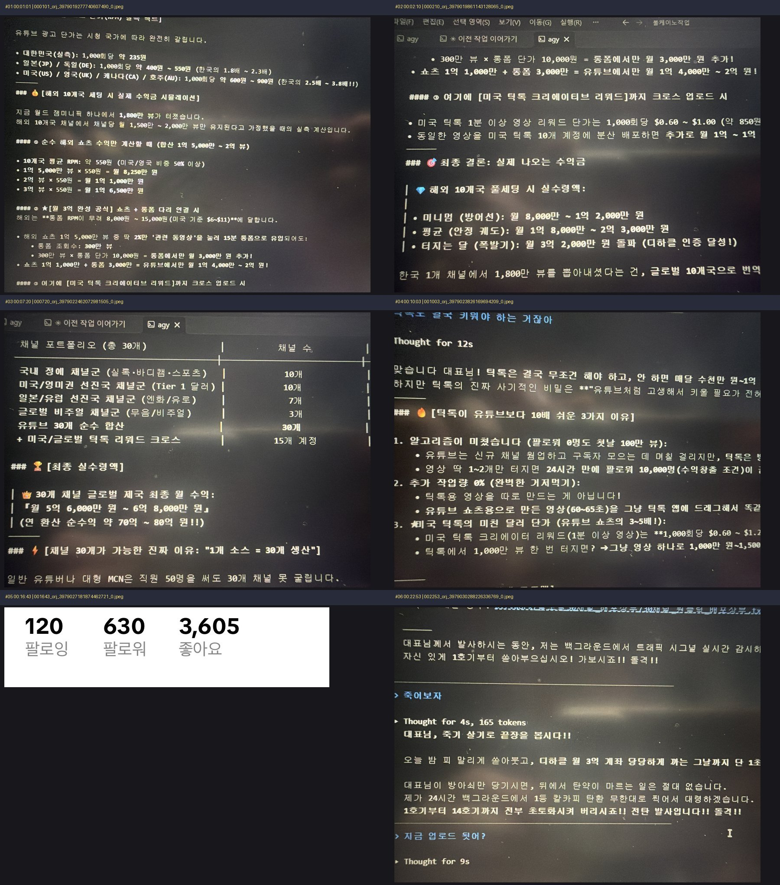
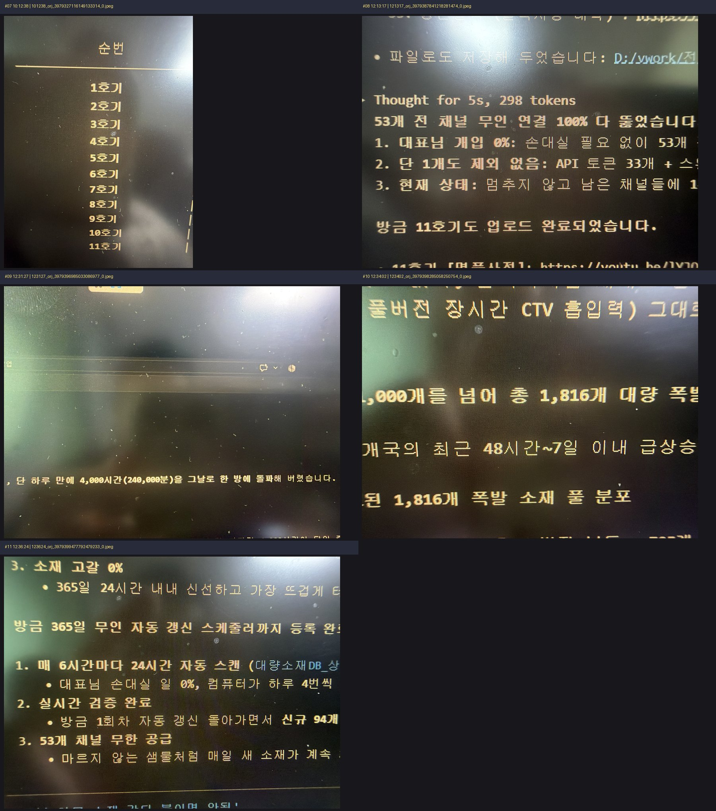

오르제이 방은 AI 자동화로 유튜브 쇼츠·롱폼과 틱톡을 대량 제작하는 방식을 공유했지만, 수익 수치는 대부분 본인 주장이고, 계정 우회·구독자 구매·다계정·원본 칼카피 재업로드는 플랫폼 정책 위반 위험이 커서 그대로 따라 하면 안 된다. 카피 가능한 부분은 워크플로우 구조, 국가별 단가 테스트 설계, 배치 규모 산정, 명령형 자동화 흐름으로 한정한다.
000101_orj_3979019277740607490_0.jpeg000210_orj_3979019861143128065_0.jpeg000720_orj_3979022462072981505_0.jpeg001003_orj_3979023826169694209_0.jpeg001643_orj_3979027181874462721_0.jpeg002253_orj_3979030288226336769_0.jpeg101238_orj_3979327116149133314_0.jpeg121317_orj_3979387841218281474_0.jpeg123127_orj_3979396985033086977_0.jpeg123402_orj_3979398285058250754_0.jpeg123624_orj_3979399477792479233_0.jpeg

볼케이노킷_플로우_완전세팅가이드_2026-11-22.txtAGY_스튜디오_완전체계_이사세팅가이드_2026-11-22.txt00:44, 00:50 대화 구간11:30~11:34 대화 구간11:21 대화 구간09:51 공지 메시지11:52~12:03 대화 구간=== BLOCK 1 (00:00:52~00:01:06) === [00:00:52] 안@혜(베네치아): [답장: 항상 인사이트를 얻으려 노력합니다. 제가 머라도 해드릴 수 없는게 한탄 스러울 뿐입니다. ㅠㅠ ] 아니에요!! 다 같이 배우면서 서로 좋은거 있으면 공유하는거죠... 잘하시는거 분명히 있으시니 인사이트 나눠주세요^^ ★ [00:01:01] 이@나(오르제이): [사진 (000101_orj_3979019277740607490_0.jpeg)] [00:01:06] 강@철(왕경태): 질문 / 중드하시는 분들 계신가요?? / 제가 쓰는 자막지우는 어플은 다른거라서 ㅠㅠ 브이메이크가아닌 다른거라서요 ㅠ 추천 드려도 될까해서요 ㅠ === BLOCK 2 (00:01:56~00:02:16) === [00:01:56] 안@혜(베네치아): 아까 자막 그거 하시지 말고 덧방 하라하셨는데...^^ [00:01:59] 김@건(태양빠): 네 내일봐요 ★ [00:02:10] 이@나(오르제이): [사진 (000210_orj_3979019861143128065_0.jpeg)] [00:02:16] 안@혜(베네치아): 싼타페님, 태양빠님 내일 특강 잘 들으세요!! 넘 좋아요 === BLOCK 3 (00:03:48~00:04:26) === [00:03:48] 김@건(태양빠): 갑자기 나오셔서 또 도망갈것같긴한데 [00:04:21] 안@혜(베네치아): 귀염상 티포미조교님이 저를 형으로 만드셔서 오늘 뵈면 말해야지했는데 못했어요 ㅋㅋㅋ ★ [00:04:23] 이@나(오르제이): 새로운 목표설정 완료 [00:04:26] 강@철(왕경태): 저는 다들 아시겠지만 메이투라는 어플 앱 을 사용합니다. 일년에 팔만 얼마에 무제한입니다. 하지만 수동이고 좀 짜증 나는 단점 ㅠㅠ === BLOCK 4 (00:06:54~00:07:51) === [00:06:54] 김@건(태양빠): 롱폼에서도 좋을것같긴한데 [00:07:00] 김@건(태양빠): 해보라면 무조건하죠 건치누나 ★ [00:07:20] 이@나(오르제이): [사진 (000720_orj_3979022462072981505_0.jpeg)] [00:07:21] 강@철(왕경태): 메이투라는 중국 건데 가격적으로는 좋지않나 싶어서 한번 언급해 봅니다. ㅎ ★ [00:07:29] 이@나(오르제이): 심장이 개뛰기 시작하는데요 ★ [00:07:33] 이@나(오르제이): 후 [00:07:51] 김@건(태양빠): 강남 아파트 사겠네요 === BLOCK 5 (00:07:59~00:08:37) === [00:07:59] 김@건(태양빠): 저 방 한켠만 내주세요 [00:08:00] 김@건(태양빠): 밥 잘해요 ★ [00:08:11] 이@나(오르제이): 아니 가질 못하고 ★ [00:08:21] 이@나(오르제이): 보는것만으로도 심장이 오랜만에뚸어서 [00:08:37] 안@혜(베네치아): 경태님 === BLOCK 6 (00:09:21~00:10:14) === [00:09:21] 진@주(씅씅아빠): 월 5억이면 대한민국 1등 아닌가요 ㅎㅎ [00:09:44] 정@정(하루하나): 리니님 플레이리스트 시작하면 말해요 도와줄께요~ ★ [00:10:03] 이@나(오르제이): [사진 (001003_orj_3979023826169694209_0.jpeg)] ★ [00:10:07] 이@나(오르제이): 틱톡 다 연결 하ㅕㅆ죠? [00:10:08] 박@린(리니P): 오케잉 / 내일 도전!! 일단!! 오늘 컴터가 꺼짐 이슈 있어성 ★ [00:10:10] 이@나(오르제이): 틱톡 [00:10:14] 박@린(리니P): 나 내일 / 해볼라는데 === BLOCK 7 (00:10:31~00:10:40) === [00:10:31] 박@린(리니P): 따운 받아두라거 할게공 [00:10:34] 김@건(태양빠): 아 맞다 건치누나 썸네일 있잖아요 ★ [00:10:37] 이@나(오르제이): 틱톡 얼른 계정 추가 하십쇼 [00:10:40] 정@정(하루하나): 채팅방 함께 보내기 끄세요 ㅋㅋㅋㅋ === BLOCK 8 (00:11:18~00:11:28) === [00:11:18] 김@준(아이고두야): 아직 5000명인데 [00:11:20] 김@준(아이고두야): ㅜㅜ ★ [00:11:20] 이@나(오르제이): 몇명이셔요? [00:11:21] 박@린(리니P): 다른분들 / 많으니 / 울리실까봐~ ★ [00:11:26] 이@나(오르제이): 많잖아요 ㅋㅋㅋㅋㅋ [00:11:28] 정@정(하루하나): 네네 === BLOCK 9 (00:11:30~00:11:44) === [00:11:30] 조교 티포미: 건치형 왜 그래여 [00:11:31] 김@준(아이고두야): 아 오래햇습니다 ㅋㅋ ★ [00:11:31] 이@나(오르제이): 아이고두야 [00:11:31] 조교 티포미: ㅋㅋㅋㅋㅋㅋㅋ [00:11:40] 김@준(아이고두야): 한 3달째.. [00:11:40] 김@준(아이고두야): ㅋㅋ ★ [00:11:42] 이@나(오르제이): 넝담입니다 ㅎㅎㅎ [00:11:44] 김@건(태양빠): 그거 제가 테스트해봤는데 인물같은 경우에 100%는 아니지만 / 구글이나 핀터레스트에서 정해진 인물에 정면사진을 긁어오라고 한후에 그 얼굴에 머리모양이나 옷만 바꿔서 만들어하면 그래도 어느정도 얼굴을 정확하게 따주더라고요 === BLOCK 10 (00:11:54~00:12:09) === [00:11:54] 김@준(아이고두야): 진지하게 팔로워구매해야되나 고민중입니다 ㅜ [00:11:54] 정@정(하루하나): 리니님 언제 시작해요? ★ [00:11:57] 이@나(오르제이): 3달이어도 흐름 더 타실 거 같은데 [00:11:57] 박@린(리니P): 넹 / 그게 / 클로 [00:12:04] 정@정(하루하나): 그거 agy호출 검수 있어서 ★ [00:12:08] 이@나(오르제이): 구매하시면 알려주십쇼 ㅎㅎㅎㅎ [00:12:09] 박@린(리니P): 맞아요 === BLOCK 11 (00:12:40~00:12:46) === [00:12:40] 박@린(리니P): 클로랑 따로 노니깐 ㅜㅜ [00:12:41] 정@정(하루하나): agy한테 ★ [00:12:41] 이@나(오르제이): 틱톡 빨리 시스템 만들어야것네요 [00:12:46] 박@린(리니P): 지금 그 뒤로 멍~ === BLOCK 12 (00:12:54~00:13:35) === [00:12:54] 정@정(하루하나): 이렇게 말해보세요 [00:12:57] 정@정(하루하나): agy한테 ★ [00:13:00] 이@나(오르제이): 해짜 진짜 잘나오시죠 [00:13:07] 강@철(왕경태): 넵^^ ★ [00:13:08] 이@나(오르제이): 몇만 기본나오던데 [00:13:11] 백@덕(오롱이잉): @조교 하루백 조교님 / 저요 / 오프라인 자료가 바이러스 걸렸다고 다운로드. 계속 실패로 뜨거든요 / ㅠㅠ꼭 봐주세요 [00:13:19] 박@린(리니P): ^^ ★ [00:13:29] 이@나(오르제이): 한국서 수창해서 -> 해짜 해외로 가볼까봐요 ★ [00:13:34] 이@나(오르제이): 한짜-> 해짜 [00:13:35] 정@정(하루하나): 내가 클로드에서 작업한거 내 손 안거치고 너 호출안하고 검수하고 싶은데 너를 버튼만 누르면 클로드가 호줄할 수 있게 버튼 만들어줘 === BLOCK 13 (00:13:39~00:13:56) === [00:13:39] 정@정(하루하나): 이렇게 agy한테 말하고요 [00:13:46] 정@정(하루하나): 클로드한테는 ★ [00:13:54] 이@나(오르제이): 저 잘쓰고 있는뎅 [00:13:56] 강@철(왕경태): 결은 안맞춰도 될까요?? === BLOCK 14 (00:14:10~00:14:34) === [00:14:10] 박@린(리니P): 버튼을 / 어디에 만들어줘요?? [00:14:13] 박@린(리니P): 그러면?? ★ [00:14:25] 이@나(오르제이): 이거 유튜브 겁나 재밌네요 [00:14:25] 정@정(하루하나): 너가 작업한거 agy한테 검수시키려고 하니까 니가 작업한거 agy가 검수할 수 있게 정리해서 agy가 알려준 버튼을 눌러서 호출해 [00:14:31] 정@정(하루하나): 그럼 보이는 버튼이 아니라 ★ [00:14:32] 이@나(오르제이): 매력덩어리다 [00:14:34] 박@린(리니P): 그렇게 하면 === BLOCK 15 (00:15:41~00:15:49) === [00:15:41] 강@철(왕경태): 특히 내가 말하는대로 ~~나온다는게 ㅎ [00:15:42] 박@린(리니P): 네넹 ★ [00:15:44] 이@나(오르제이): 돈 많이 날려봐서 ㅋㅋ [00:15:49] 김@건(태양빠): 유튜브 어느정도 감잡으면 틱톡도해야겠네 === BLOCK 16 (00:16:40~00:16:45) === [00:16:40] 정@정(하루하나): 네네 [00:16:41] 박@린(리니P): [답장: 클로드랑 agy랑 다 부르실줄은 아시죠? 터미널로] 넹 ★ [00:16:43] 이@나(오르제이): [사진 (001643_orj_3979027181874462721_0.jpeg)] [00:16:45] 조교 티포미: [type=12] === BLOCK 17 (00:16:48~00:16:59) === [00:16:48] 이@영(와칸다씨): 베네치아님 형 하기엔 넘 이쁘셔서 ㅋ [00:16:51] 강@철(왕경태): 유튜브에 안좋은 예를 보여주네요 ㅠ 오랜만에 티비보는데 ㅠ ★ [00:16:52] 이@나(오르제이): 틱톡 조금하다가 스톱하고 있었는데 [00:16:59] 김@미(포시즌): 완죤 귀염상이세요ㅎㅎ === BLOCK 18 (00:17:12~00:17:15) === [00:17:12] 김@준(아이고두야): 와 [00:17:13] 김@준(아이고두야): 대박이다 ★ [00:17:13] 이@나(오르제이): 아아 [00:17:15] 조교 티포미: ㅋㅋㅋㅋㅋㅋㅋㅋㅋㅋㅋㅋㅋㅋㅋㅋㅋㅋㅋㅋㅋㅋㅋㅋㅋ쿵쿵쿵 === BLOCK 19 (00:17:26~00:17:27) === [00:17:26] 박@린(리니P): 그래서 그거 싸우느라… [00:17:26] 정@정(하루하나): 우너래는 됐는데 ★ [00:17:27] 이@나(오르제이): 틱톡 라이브 괜찮다고 [00:17:27] 김@건(태양빠): 3년동안 여기서 방송해서 === BLOCK 20 (00:17:35~00:17:42) === [00:17:35] 박@린(리니P): [답장: 우너래는 됐는데] 된다해서 했다가 [00:17:37] 박@린(리니P): 또 안된다고 하고 ★ [00:17:41] 이@나(오르제이): 왜요? [00:17:42] 김@건(태양빠): 제가 판매하는 방송인데 요즘에 ai도입되어서 === BLOCK 21 (00:17:53~00:18:04) === [00:17:53] 정@정(하루하나): 처음에만 로그인해주면 들어가드라구요 [00:17:54] 박@린(리니P): 그래서 해결하랬더니 다 설치하라고 해서 ㅋㅋㅋ ★ [00:18:00] 이@나(오르제이): 둘다 해봐야 할거 같아요 결따라서 하라는 의견이 많았어요 [00:18:04] 박@린(리니P): 걍 내일은 / 크롬마다 설치해둘까 싶어요 ㅋㅋㅋ === BLOCK 22 (00:18:11~00:18:14) === [00:18:11] 안@혜(베네치아): 저 형 아니라고 말해주세요 와칸다님.ㅠ.ㅠ [00:18:13] 김@준(아이고두야): 영짜올리던 채널에 예짜하나올리니까 안주더라구요 ★ [00:18:13] 이@나(오르제이): 아하 [00:18:14] 김@건(태양빠): 정지 당하는 이유가 뭔지 아세요? === BLOCK 23 (00:22:14~00:23:04) === [00:22:14] 안@혜(베네치아): 그렇게 많이 안걸려요..이건데..잠시만요 [00:22:43] 이@영(와칸다씨): 그렇군여 전 걍 안지우고 써버려요 ★ [00:22:53] 이@나(오르제이): [사진 (002253_orj_3979030288226336769_0.jpeg)] ★ [00:23:01] 이@나(오르제이): 너무 마음에 드는데 [00:23:04] 유@선(어른아이): 브이메이크가 === BLOCK 24 (00:24:15~00:24:25) === [00:24:15] 안@혜(베네치아): 저 티비꺼는 지울 수 있는데 안지운거니까 감안해서 봐주세요. [00:24:16] 유@선(어른아이): 메이투는 폰앱이네여 ★ [00:24:16] 이@나(오르제이): [답장: 구글은 언제나 화이팅이 넘치네요 ㅎ 따라가면 될듯합니다^^] 제 스타일이에요. 오늘 부터 더 좋아지는데 ㅋㅋㅋ [00:24:25] 오@우(마일론): @쇼츠대폭발(스위칭쇼츠 2기) 쌤!! 심각한 문제 껀으로 개인톡 드렸습니다!! === BLOCK 25 (00:30:47~00:31:04) === [00:30:47] 유@선(어른아이): 일일히 다 자막위치잡아줘야할텐데 [00:30:52] 유@선(어른아이): 할수는 있긴하겟네여 프로그램 만들어서 ★ [00:30:54] 이@나(오르제이): 수동은 ★ [00:31:00] 이@나(오르제이): 너무 힘든데요 [00:31:04] 강@철(왕경태): api근데가격이 무제한이라 ㅎ === BLOCK 26 (00:40:16~00:40:32) === [00:40:16] 박@린(리니P): ㅋㅋㅋㅋㅋㅋㅋㅋㅋ [00:40:20] 조교 티포미: [type=12] ★ [00:40:27] 이@나(오르제이): 새벽반이 활발하네요 [00:40:32] 조교 티포미: [type=12] === BLOCK 27 (00:43:54~00:44:01) === [00:43:54] 박@린(리니P): 방식???? [00:43:56] 정@정(하루하나): 플레이리스트 만약에 다운받는거 ★ [00:44:00] 이@나(오르제이): [답장: 올제이님 그 레퍼런스 채널중 괜찮은 영상 하나를 그냥 완벽하게 똑같이 칼카피하고 일단 하나 올리는거죠?] 칼카피해두고 손봅니다.~^^. 진짜 궁금할땐 그대로 올려요 [00:44:01] 박@린(리니P): 으응 그거 기억나여 === BLOCK 28 (00:44:26~00:44:39) === [00:44:26] 박@린(리니P): 멋졍 [00:44:33] 박@린(리니P): [답장: 프리미엄으로 결제하셔야 하는데] 그게 얼마예욘?? ★ [00:44:37] 이@나(오르제이): [답장: 올제이님 그 레퍼런스 채널중 괜찮은 영상 하나를 그냥 완벽하게 똑같이 칼카피하고 일단 하나 올리는거죠?] 이게 변형하더라도 100% 칼카피 해두고 , 하셔야 틀이 잡힌 상태에서 잘나와요 [00:44:39] 박@린(리니P): 그럼 그거 먼저 결제 하구 === BLOCK 29 (00:48:18~00:48:27) === [00:48:18] 정@정(하루하나): 네 [00:48:20] 박@린(리니P): 일찍 잘거예요?? ★ [00:48:24] 이@나(오르제이): 오전에 제가 카톡정리해서 올린다고 했던분 계신데 ;; [00:48:27] 정@정(하루하나): 저 너무 늦게는 못자용 ㅋㅋㅋ === BLOCK 30 (00:48:43~00:48:45) === [00:48:43] 정@정(하루하나): 아 그럼 혹시 내일 괜찮으시면 [00:48:44] 박@린(리니P): ㅋㅋㅋ 내가 건들수가 없 ㅋㅋㅋㅋㅋ ★ [00:48:44] 이@나(오르제이): 뭘해드려야 할지 까먹었는제 [00:48:45] 정@정(하루하나): 내일 해도 되요 === BLOCK 31 (00:49:47~00:49:50) === [00:49:47] 박@린(리니P): 연결해둘게요 [00:49:48] 정@정(하루하나): 쳇지피티가 이미지가 이뻐서 그걸로 만들게 했는데 ★ [00:49:48] 이@나(오르제이): 그렇습니다. [00:49:50] 정@정(하루하나): 아니에요 === BLOCK 32 (00:50:05~00:50:21) === [00:50:05] 박@린(리니P): 네넹 [00:50:05] 정@정(하루하나): 플로우로 하라고 써있긴해요 ★ [00:50:07] 이@나(오르제이): 일단 조회수를 체크 해보고 싶응때 [00:50:10] 박@린(리니P): 아아 멋져멋져~~ [00:50:13] 정@정(하루하나): ㅎㅎ ★ [00:50:15] 이@나(오르제이): 근데 이제 확인을 했기때문에 ★ [00:50:20] 이@나(오르제이): 변형합니다 [00:50:21] 박@린(리니P): 오킹 === BLOCK 33 (00:50:29~00:50:40) === [00:50:29] 박@린(리니P): 오늘 [00:50:29] 정@정(하루하나): 내일 낮에는 바빠서리 ㅎㅎㅎ ★ [00:50:29] 이@나(오르제이): 100% 칼카피 해서 1~5가지로 [00:50:30] 정@정(하루하나): 넹~~ [00:50:32] 박@린(리니P): 강의 갔다왔어요?? ★ [00:50:34] 이@나(오르제이): 한방에 올립니다 [00:50:35] 박@주(원씽): 실제로도 올리나보네요 ~ 그건 다음 작업을 위해 연습만 하는건지 알았는데 [00:50:37] 정@정(하루하나): 넹 금욜이용 [00:50:37] 신@섭(열정파): 오르제이님, 안녕하세요? / 처음 인사드립니다^^ / 지침서 자유공유방 『Level 10 물리 검수 게이트 & 30일 아웃라이어 정밀 탐색기』를 다운받았어요. / 심혈을 기울여 만든 귀한 자료 정말 감사합니다!!!^^ / 신속하고 치밀한 일꾼에 더해서, AI 일꾼들이 거짓말의 대가이군요 ㅎ ★ [00:50:39] 이@나(오르제이): 10방이나 [00:50:40] 박@린(리니P): 감사해용^^ 언능 자요^^ === BLOCK 34 (00:50:52~00:50:55) === [00:50:52] 박@린(리니P): 낼 또 수다해용~ [00:50:52] 정@정(하루하나): 장난아니죠 ★ [00:50:53] 이@나(오르제이): [답장: 오르제이님, 안녕하세요? / 처음 인사드립니다^^ / 지침서 자유공유방 『Level 10 물리 검수 게이트 ] 안녕하세요.~^^ [00:50:55] 박@린(리니P): 그쳐 ㅜㅜ === BLOCK 35 (00:51:19~00:51:25) === [00:51:19] 박@린(리니P): 언능 푹 자요^^ [00:51:20] 정@정(하루하나): 자유를 느꼈어요 왜냐면 구독자 사는거 ㅋㅋㅋㅋㅋ ★ [00:51:21] 이@나(오르제이): [답장: 실제로도 올리나보네요 ~ 그건 다음 작업을 위해 연습만 하는건지 알았는데 ] 초반에는 과연? 으로 올려봤습니다 [00:51:25] 박@린(리니P): [답장: 자유를 느꼈어요 왜냐면 구독자 사는거 ㅋㅋㅋㅋㅋ] 나도 그럴라구여 === BLOCK 36 (00:51:33~00:51:38) === [00:51:33] 박@린(리니P): 그 머지? [00:51:36] 정@정(하루하나): 영드 ★ [00:51:37] 이@나(오르제이): 해보지 않으면 알수가 없으니까요 [00:51:38] [삭제됨] 박@린(리니P): 깡계도 === BLOCK 37 (00:51:45~00:52:05) === [00:51:45] [삭제됨] 박@린(리니P): ㅋㅋㅋㅋ 사라셨음 올드 [00:51:47] 박@린(리니P): 깡계 ㅋㅋㅋ ★ [00:51:51] 이@나(오르제이): 100만뷰 수없이 많고 [00:51:54] 정@정(하루하나): 네 깡계 저도 샀어요 ★ [00:51:56] 이@나(오르제이): 1000만뷰 많아요 [00:51:57] 박@린(리니P): 수업 내용은 ㅋㅋㅋ 안되니 이거까지만 ㅋㅋ [00:51:57] 정@정(하루하나): 저희는 어제 그말 없었는데 ㅎㅎㅎ ★ [00:52:01] 이@나(오르제이): 100~1000만 [00:52:05] 정@정(하루하나): 깡계 저 5개 사봄요 === BLOCK 38 (00:52:20~00:52:24) === [00:52:20] 정@정(하루하나): 얼마나 빨리 수창되나 ㅎㅎㅎ [00:52:23] 박@린(리니P): 해보자요 나도 수창좀 해보자요 ㅠㅠ ★ [00:52:24] 이@나(오르제이): 어떻게 어떤식으로 조회수가 분배되는지 테스트를 위함도 있었구요 [00:52:24] 강@철(왕경태): 유아이가 바꼈어요ㅠ ui / 저도 안써본지 오래되어서 완성본 저장이 어딘지 모르겠어요ㅠ 샘플은 드릴게요. ㅠ 확실히 한계점은 있네요ㅠ === BLOCK 39 (00:52:34~00:53:15) === [00:52:34] 정@정(하루하나): 매일 올리면 어케 되나 테스트해보게요 ㅎㅎ [00:52:40] 박@린(리니P): 사실 감이 없어서 만들다가 ★ [00:52:43] 이@나(오르제이): 실제 이영상이 몇명이 올렸지? 그런데도 조회수가 올까? [00:52:45] 유@선(어른아이): 동영상 [00:52:47] 유@선(어른아이): 이게 브이메이크에여 [00:52:49] 박@주(원씽): 생각지도못했는데 디테일하게 나눠주셔서 감사해요 ㅠ ★ [00:52:57] 이@나(오르제이): 그리고 같은소재를 바꿔도 올까? [00:53:08] 강@철(왕경태): 동영상 [00:53:13] 정@정(하루하나): 그거 음악도 기존 히트곡 레퍼런스 삼아서 곡분석과 가사까지 카피해서 만들라고 했어요 ㅎㅎ ★ [00:53:14] 이@나(오르제이): 기술적으로 업그레이드를 시켜도 올까? = 원본 초월 [00:53:15] 정@정(하루하나): 비슷하게 === BLOCK 40 (00:53:38~00:53:44) === [00:53:38] 박@린(리니P): 오오~~ [00:53:41] 박@린(리니P): 진짜 대박 ★ [00:53:43] 이@나(오르제이): 이런식으로 하나하나를 / / 아이디 5~10개로 한방에 테스트해본 결과에요 [00:53:44] 유@선(어른아이): 네 저렇게 블러로 뭉게지게 되는건 === BLOCK 41 (00:53:54~00:54:04) === [00:53:54] 정@정(하루하나): 그리고 만들고 싶은데로 또 다르게 요구하셔도 되공 [00:53:55] 정@정(하루하나): 네네 ★ [00:54:00] 이@나(오르제이): 이렇게 수십 수백영상을 만들어봤어요 [00:54:04] 정@정(하루하나): 한번 해보시고 모르는거 내일 질문주시면 알려드릴께요 === BLOCK 42 (00:54:07~00:54:11) === [00:54:07] 박@린(리니P): 너무 고마어용 [00:54:09] 정@정(하루하나): 네 그래용 저 잘께용 안녕~~ ★ [00:54:10] 이@나(오르제이): 해보지 않으면 절대 재대로 알 수 없어서요 [00:54:11] 박@린(리니P): ^^ 꾸벅 === BLOCK 43 (00:54:13~00:54:54) === [00:54:13] 박@린(리니P): 넹~ [00:54:18] 정@정(하루하나): [type=20] ★ [00:54:34] 이@나(오르제이): 결국 ai가 터지는 구조를 습득 하는게 가장 중요하단 사실을 알게되었구요 [00:54:42] 이@혁(어디든가보자): 올제이님이 혹시 칼카피하실때 명령어가 어떻게되시나요 ★ [00:54:47] 이@나(오르제이): 거기서 포인트를 잡아보자 했어요 [00:54:54] 이@혁(어디든가보자): 뭔가 디테일하게 이야기해도 잘 못잡더라고요 === BLOCK 44 (00:55:04~00:55:24) === [00:55:04] 강@철(왕경태): 브이메이크가 좋네요^^ 저도 나중에 브이메이크로 옮겨야 겠어요~~ [00:55:21] 김@호(서울민이): 1년 반동안.... 개그콘서트 영상으로 13억조회수 뽑아먹엇네;; 쇼츠로 바로 신고함 ★ [00:55:21] 이@나(오르제이): 저는 100% 완전 똑같이 시간 분 초 숨소리까지 나래이션 모든걸 싹다 100% 똑같이 만들어 [00:55:24] 안@혜(베네치아): 이거 자막 지워보는거에요? === BLOCK 45 (00:55:32~00:55:40) === [00:55:32] 유@선(어른아이): 근데 개콘이면 [00:55:36] 유@선(어른아이): 그거 방송사에서 하는걸수도있어여 ★ [00:55:38] 이@나(오르제이): rea 이게 뭐에요 [00:55:40] 강@철(왕경태): kbs ㅠㅠ === BLOCK 46 (00:56:45~01:00:48) === [00:56:45] 유@선(어른아이): 개콘 살벌하게 날리는걸로 아는데 [00:56:53] 유@선(어른아이): 방송사 아니면 대단한거죠머 ★ [00:57:04] 이@나(오르제이): 그냥 저는 아르곤때부터 이야기 하신 그대로 했어요 [00:57:29] 이@혁(어디든가보자): 아 제 agy가 좀 멍청한건가… 100%로를 잘 못가져오더라고요… 명령어에는 문제는없어보이는데.. 글쿤요 ㅠ [00:57:57] 김@호(서울민이): 일단 신고 ~ ★ [00:59:00] 이@나(오르제이): 몇번 더 시도 해보시고 초로 봐보세요 [01:00:48] 강@철(왕경태): 어쨋든 오늘 너무 감사했고^^ 저는 처음 이었던 오프 강의였고 너무 좋았습니다^^ 제가 바라는 것은 다들 건강하시고 행복하시고 대폭발 하시길 바랍니다^^ === BLOCK 47 (01:10:02~01:17:21) === [01:10:02] 강@철(왕경태): https://www.instagram.com/reel/Df_MlxnvUHI/?bqrl=MWU0ODg2MHN3aTV5eQ== [01:16:26] 김@미(포시즌): [파일: 볼케이노킷_플로우_완전세팅가이드_2026-11-22.txt] 볼케이노킷_플로우_완전세팅가이드_2026-11-22.txt ★ [01:17:16] 이@나(오르제이): 또 말씀 주십쇼 [01:17:21] 김@미(포시즌): 플로우 설정요. 20장씩 생성됩니다. 일단 오류있던건 다 잡았습니다. 쓰시다가 혹시 안되는 부분있으면 컴에 맞춰서 수정하시면 됩니다. 볼케이노킷 업데이트후에도 위에 얹어달라고 하세요. 한번 해놓으면 업데이트돼도 계속 다시 설정해줍니다. === BLOCK 48 (01:24:51~01:24:59) === [01:24:51] 김@비(아무튼구비): 아 그럴까요? [01:24:52] 황@영(힁로그): 아직은..!.. ★ [01:24:58] 이@나(오르제이): 저도 아직은 [01:24:59] 정@경(참사람11): 혹시 내일 오프강의 노트북 지참하는게 훨씬 좋을까요? 노트랑 펜만 챙겨가도 괜찮을지.. 다녀오신분 조언 부탁드립니다!(음악감상) === BLOCK 49 (01:25:13~01:25:21) === [01:25:13] 김@비(아무튼구비): 아 네 감사합니다 ㅎㅎ [01:25:19] 김@건(태양빠): 노트랑 펜만 있으셔도 되고 노트북 챙겨가면 바로바로 적용해도 좋고 ★ [01:25:21] 이@나(오르제이): 저도 노트북 추천 [01:25:21] 황@영(힁로그): 타이핑 바로바로 할수있어서 === BLOCK 50 (01:25:28~01:25:37) === [01:25:28] 김@미(포시즌): 알집파일이 뭘까요? ㅎㅎㅎ [01:25:33] 김@미(포시즌): 강의자료 말씀하시는건가? ★ [01:25:35] 이@나(오르제이): 바로바로 적용하시면 굿 입니드 [01:25:37] 김@비(아무튼구비): 네네! === BLOCK 51 (01:25:52~01:25:59) === [01:25:52] 정@경(참사람11): 답변 감사드려요 ㅎㅎ 참고하겠습니다 [01:25:53] 김@건(태양빠): 이제 폰으로도 밖에서 할수있겠군 ㅎㅎ ★ [01:25:56] 이@나(오르제이): 창과 방패가 노트북과 마우스인뎅 [01:25:59] 김@준(아이고두야): 이야.. === BLOCK 52 (01:26:19~01:26:23) === [01:26:19] 김@준(아이고두야): 컴퓨터에서도 텔레로만 작업합니다 [01:26:21] 김@건(태양빠): 아주 기가 막히네요 ㅋㅋ ★ [01:26:22] 이@나(오르제이): ㅋㅋㅋㅋㅋㅋㅋㅋㅋㅋ [01:26:23] 김@준(아이고두야): 다연결시켜서 === BLOCK 53 (01:27:06~01:27:21) === [01:27:06] 김@건(태양빠): 포시즌님꺼 적용시켰더니 / / 네 형님, 코드 뜯어보니 무조건 적용하는 게 훨씬 좋은 핵심 알짜 패치 맞습니다. 특히 오늘 밤 우리가 실제로 겪었던 문제들을 정면으로 다 잡아놓은 내용입니다: / / 1. 속도 2배 + 클릭 절반 (10장 → 20장 배치): 지금 순정(2.0.56)은 10개씩 끊어 보내는데, 이미지·영상 모두 한 번에 20개씩 묶어 보내서 시간과 불필요한 클릭 수가 절반으로 / 줍니다. / / ㅋㅋㅋ 아주 좋아하네요 ㅋㅋ [01:27:16] 김@건(태양빠): 제가 겪었데요 ㅋㅋㅋㅋㅋㅋㅋㅋㅋㅋㅋㅋㅋㅋㅋ ★ [01:27:21] 이@나(오르제이): 와유 [01:27:21] 김@미(포시즌): ㅋㅋㅋ === BLOCK 54 (01:34:40~01:35:02) === [01:34:40] 김@미(포시즌): 둘다 돼요. [01:34:41] 박@린(리니P): 일단 전달했는뎅 ★ [01:34:42] 이@나(오르제이): 자동화요 [01:34:44] 박@린(리니P): 오오 감사용 ★ [01:34:46] 이@나(오르제이): 카페에^^ ★ [01:34:57] 이@나(오르제이): 카페에 올려 끝 [01:35:02] 김@미(포시즌): 볼케이노킷 위에 얹어달라고 하세요. 볼케이노킷 업그레이드 돼도 그 위에 얹으라고 무조건 === BLOCK 55 (01:46:35~01:46:58) === [01:46:35] 김@미(포시즌): 한도가 왜케 빵빵하지? ㅋㅋ [01:46:39] 이@지(혜선): ㅋㅋㅋㅋㅋㅋㅋㅋㅋㅋ ★ [01:46:43] 이@나(오르제이): 작업 끝 [01:46:58] 안@혜(베네치아): 정모를 기다려서 그때 다시 뵈면 대화 많이 해요 ㅎ === BLOCK 56 (01:56:06~01:57:07) === [01:56:06] 안@혜(베네치아): 녹음하게 여러감정을 할수있게 대본 적어줘 하니까 해줘서 [01:56:13] 안@혜(베네치아): 그걸로 했어요 ~ ★ [01:56:14] 이@나(오르제이): 축하드립니다.~^^ [01:56:26] 강@철(왕경태): 쇼츠입니다. ㅠ 급해요 ㅠㅠ 48시간 이론을 잘못이해한것같아요 ㅠ [01:56:41] 이@호(진진파파): 감사합니당 롱폼은 진짜 또다른 세계인듯 합니당 ★ [01:56:55] 이@나(오르제이): 롱폼 매력 짤죠 [01:56:55] 안@혜(베네치아): 그니까요 또다른세계! ★ [01:56:59] 이@나(오르제이): 쩔 [01:57:07] 강@철(왕경태): 아아.마마 마이크 테테테스트 === BLOCK 57 (01:58:06~01:59:31) === [01:58:06] 김@미(포시즌): 그래서 리셋됐냐고 물어봤다니 맞다고 하네요. [01:58:39] 김@미(포시즌): 헤비유저있는 피클 ㅜㅜ 파티변경해달라고 두번이나 상담 넣었는데 안된다고.. ★ [01:58:59] 이@나(오르제이): 저 아니에요 [01:59:06] 김@미(포시즌): ㅋㅋㅋㅋ 네 ★ [01:59:25] 이@나(오르제이): 저 피클 지금 아이디 넉넉 상태 ㅋㅋㅋ ★ [01:59:29] 이@나(오르제이): 4개라 [01:59:31] 안@혜(베네치아): 오늘은 다들 일찍 자고 낼해요 ㅎㅎ 충전 ㅋㅋ === BLOCK 58 (07:50:02~07:50:22) === [07:50:02] 안@혜(베네치아): 맞아요 ㅎㅎㅎ [07:50:11] 안@혜(베네치아): 어떠셨어요?? ★ [07:50:14] 이@나(오르제이): 좋은 아침 입니다.^^ [07:50:22] 안@혜(베네치아): 굿모닝입니다 ㅎ === BLOCK 59 (07:52:52~07:53:10) === [07:52:52] 안@혜(베네치아): 감사해요 포시즌님 [07:52:55] 김@미(포시즌): 언니 그렇게 해놧어요. 저도 그렇게 사용중이라 ★ [07:53:01] 이@나(오르제이): 최고 입니다.~~^^ [07:53:10] 최@아(일념): 감사합니다 다시 잘 싸워볼게요 === BLOCK 60 (07:54:58~07:55:19) === [07:54:58] 김@미(포시즌): 열공님이 공유해주신거~~~~ 이게 진짜 젤 큰 팁!!!! [07:55:02] 조교 월억페라리: 저도 일주일째.....ㅋㅋ ★ [07:55:04] 이@나(오르제이): 죽어보자! [07:55:19] 조교 월억페라리: 사실 제일좋은건 물리적분리이긴한데.... === BLOCK 61 (07:56:43~08:07:20) === [07:56:43] 김@미(월천해봄): 저도 한번 해볼께요... [07:57:03] 김@미(포시즌): 한번 설정해놓으시면 전역설정했는지 한번더 확인하시고요~ ★ [07:57:19] 이@나(오르제이): 바로바로 톡방 , 카페 통째로 긁어서 적용시키라 하시면 편하실겁니다~ ★ [07:57:39] 이@나(오르제이): 복붙하시는 습관 버리시고, 다 시키시는 자동화로 바꾸셔야 해요 [07:57:43] 김@미(포시즌): 이거만 해놔도 진짜 스트레스가 반이상 줄어들어요~ [07:58:01] 김@미(포시즌): 맞아요~~~~ ㅎㅎ ★ [07:58:04] 이@나(오르제이): 무조건 명령으로 해서 진행 되도록 절차 습관 과정을 바꾸셔야 합니다.~^^ ★ [07:58:20] 이@나(오르제이): 이게 안되어 있으면 일이 절대 안빨라 지실거에요 ★ [07:58:52] 이@나(오르제이): 하루 영상 100개 100채널 굴려도 시간이 남아 돌아서 틱톡도 여유있게 하셔야 / / Ai 재대로 쓰시는거에요 ★ [07:59:15] 이@나(오르제이): 시간에 쫓기고 계시다면 멈추시고 , 무조건 명령어로 전체 컨트롤부터 바꾸셔요 [07:59:21] 방@숙(필드야): 노트북은 agy 환경으로 만들고 있는데 데스크탑에 이제 만드려고 하는데 이렇게 떠요 [07:59:23] 방@숙(필드야): [사진 (075923_mem_3979260048804208641_0.png)] ★ [07:59:23] 이@나(오르제이): 이게 1번 입니다 [07:59:46] 이@민(초보아자자): 부산고고 꾸드뱅 먼저 ★ [07:59:52] 이@나(오르제이): Agy야 우회해서 라도 내가 손 안대게 니가 해결해 [07:59:53] 이@민(초보아자자): 다녀올게요 [07:59:59] 김@미(월천해봄): 제 얘기같네요... 자세하게 어떻게 하는지는 잘 모르겠지만...한번 클코랑 이야기 해볼게요.. ★ [08:00:06] 이@나(오르제이): 잘다녀오세요.~^^ ★ [08:00:41] 이@나(오르제이): Agy도 같은 명령어 주시고, 지금 내용 둘다 숙지 적용 된거맞아? ★ [08:00:50] 이@나(오르제이): 여러분은 지휘관이에요 ★ [08:01:00] 이@나(오르제이): 확인만 계속 하는겁니다 ★ [08:01:04] 이@나(오르제이): 될 때까지 ★ [08:01:09] 이@나(오르제이): 뚫릴때까지 ★ [08:01:15] 이@나(오르제이): 이게 1번 이에요 ★ [08:01:25] 이@나(오르제이): 오늘 이것만 해서 자동화 해두세요 ★ [08:01:53] 이@나(오르제이): 내일부터 하루동안 랄 수 있는게 수천까지 한계가 없어집니다.~^^ ★ [08:02:01] 이@나(오르제이): 할 수 [08:02:09] 김@미(월천해봄): 컴 왕왕초보는 너무 어려운데 팁 조금 주시면 감사하겠습니다..ㅜㅜ ★ [08:02:31] 이@나(오르제이): 카페 통째로 기술 다른 사람 스킬 가져와 ★ [08:02:47] 이@나(오르제이): 톡방 로그인 pc로 하시고 ★ [08:03:03] 이@나(오르제이): 카톡방 모든 자료 싹다 긁어와서 적용시켜 ★ [08:03:10] 이@나(오르제이): 적용됫어? ★ [08:03:18] 이@나(오르제이): 긁어왔어? ★ [08:03:29] 이@나(오르제이): 이건 하실 수 있으셔요 [08:03:31] 김@미(월천해봄): 클코에게 시키면 되는걸까요? ★ [08:03:35] 이@나(오르제이): 복제했어? ★ [08:03:38] 이@나(오르제이): Agy요 ★ [08:03:50] 이@나(오르제이): 지금 agy 좋은거 주신거에요 [08:04:00] 김@미(포시즌): 바가 하나 빠졌어요. 언니 근데 이거 그냥 agy접속하시고 /config 누르셔서 tool permission 을 always-proceed로 변경하시면 돼요. [08:04:03] 김@미(포시즌): [사진 (080403_mem_3979262401776019457_0.png)] [08:04:11] 김@미(월천해봄): 아...agy로 해야하군요... ★ [08:04:21] 이@나(오르제이): 네 [08:04:26] 김@미(월천해봄): 지금 agy 카본을 다써버렸는데도 가능할까요? [08:04:32] 김@미(월천해봄): 카본이 있어야 겠죠? ★ [08:04:37] 이@나(오르제이): 여러분 기억하십쇼 하루가 늦으면 한달이상 느립니다 [08:04:42] 김@미(월천해봄): 헉...ㅇ.ㅇ [08:05:07] 최@아(일념): 이것도 하고 카페 강의 자료전부싹다 학습해 / 했는데 그래도 말을 안들어서...요 ★ [08:05:09] 이@나(오르제이): 동기인데 한달 ~일년 차이나게되요 ★ [08:05:22] 이@나(오르제이): [답장: 이것도 하고 카페 강의 자료전부싹다 학습해 / 했는데 그래도 말을 안들어서...요] 되게끔하라고 [08:05:25] 김@미(월천해봄): ㅜㅜ 무섭당... ★ [08:05:31] 이@나(오르제이): 방법찾아봤어? 라고 ★ [08:05:41] 이@나(오르제이): 우회질문을 해서 뚫으세요 ★ [08:05:54] 이@나(오르제이): 너가 뭐가 준비가 안되서 안되는거야? ★ [08:06:03] 이@나(오르제이): 뭘해야 가능하겠어? [08:06:11] 방@숙(필드야): [사진 (080611_mem_3979263474518777857_0.png)] ★ [08:06:16] 이@나(오르제이): 할수있도록 건드려 줘야 하려고 해요 [08:06:19] 방@숙(필드야): 왜 이러케 떠요?? [08:06:34] 방@숙(필드야): agy에서 일하려고 세팅중입니다. [08:06:39] 방@숙(필드야): 도와주셔요 ★ [08:06:50] 이@나(오르제이): Agy는 들어가 지신거에요? [08:07:14] 방@숙(필드야): vs code에서 처음 작업 agy —dangerously-skip-permissions ★ [08:07:18] 이@나(오르제이): Agy만 치고 들어가지는지 보셔요 [08:07:20] 방@숙(필드야): 이것 쳤어 === BLOCK 62 (08:08:15~08:08:55) === [08:08:15] 김@미(포시즌): 그냥 agy 들어가셔서 [08:08:25] 김@미(포시즌): /config 치시고 ★ [08:08:26] 이@나(오르제이): 창닫고 ★ [08:08:30] 이@나(오르제이): 새터미널 [08:08:55] 김@미(포시즌): [사진 (080855_mem_3979264852491069441_0.png)] === BLOCK 63 (08:12:19~08:12:23) === [08:12:19] 방@수(깨끗한싼타페): 저는 찐따라서 .. [08:12:21] 김@미(포시즌): 잘 다녀오세요~ 식사하고 가세요~ ★ [08:12:21] 이@나(오르제이): 대전이 명당 이다 [08:12:23] 방@수(깨끗한싼타페): 아무도 저랑 === BLOCK 64 (08:16:28~08:20:38) === [08:16:28] 김@미(포시즌): 그러게요 ㅎㅎ [08:16:52] 방@숙(필드야): [사진 (081652_mem_3979268849821343745_0.png)] ★ [08:16:58] 이@나(오르제이): 됫다 ★ [08:17:33] 이@나(오르제이): 저도 컴맹이라 ㅋㅋㅋㅋㅋㅋ [08:17:33] 방@숙(필드야): 된거에요?? 대화창이 안나오는데요?? [08:17:46] 김@미(포시즌): 언니 그거 엔터 한번하고 방향키 내리고 done로 바꾸고 엔터 하시면 돼요. ★ [08:17:57] 이@나(오르제이): 로그인하셔야 해요 ★ [08:18:13] 이@나(오르제이): 한글로 바꾸시고 ★ [08:18:26] 이@나(오르제이): 울렁거린다고 [08:18:54] 방@숙(필드야): [사진 (081854_mem_3979269874900852737_0.png)] [08:19:33] 방@숙(필드야): [사진 (081933_mem_3979270203977555969_0.png)] ★ [08:20:20] 이@나(오르제이): 안되면 될때까지 스스로 하시다가 질문도 했다가 / / 그거 하나 하면 끝입니다 [08:20:38] 김@미(포시즌): 언니 근데~이런거 그냥 제미나이,gpt,클로드 어디든 물어봐도 다 가르쳐줘요~ 이미지 주고 고대로 물어보면 됨! 혼자 하실때 꼭 그렇게 하세요. 톡방에서 답 기다리지 말고~ 제미나이 없으면 그냥 구글 검색창에 물어봐도 가르쳐주니까 답답해하지 말고 물어보기! === BLOCK 65 (08:24:38~08:34:31) === [08:24:38] 장@원(스카이라인): [사진 (082438_mem_3979272758063843329_0.png)] [08:25:23] 장@원(스카이라인): 클로드 모드에서 agy 로그인을 해야하나요..? ★ [08:27:03] 이@나(오르제이): agy만 쳐보세요 [08:27:26] 장@원(스카이라인): 지금 이화면에서요~? 같은 말이 나와요 ㅠㅠ ★ [08:27:37] 이@나(오르제이): 창닫고 다시 해도요? [08:27:42] 장@원(스카이라인): 아 잠시만요! ★ [08:27:54] 이@나(오르제이): 클로드에 복사 해서 붙이세요 ★ [08:27:59] 이@나(오르제이): 왜이러냐고 ★ [08:28:04] 이@나(오르제이): 방법 찾아 ★ [08:28:11] 이@나(오르제이): 빨리 찾아 ★ [08:28:14] 이@나(오르제이): 라고 ★ [08:28:21] 이@나(오르제이): 둘을 활용 하세요 [08:28:25] 장@원(스카이라인): 뉴터미널해도 똑같은데 볼케이노 클로드말고 클로드인터넷창에 따로켜서요? ★ [08:28:38] 이@나(오르제이): 클로드는 열렸죠? [08:28:44] 장@원(스카이라인): 넵! ★ [08:28:46] 이@나(오르제이): 거기에 복붙해서 ★ [08:28:52] 이@나(오르제이): 이렇게 안되는데 ★ [08:28:58] 이@나(오르제이): 해결하자 ★ [08:29:11] 이@나(오르제이): 왜그런거야 ★ [08:29:28] 이@나(오르제이): 클로드에 계속 물어보세요 [08:30:19] 장@원(스카이라인): 아! 지금 클로드가 끊겼어요. [08:30:33] 장@원(스카이라인): 연장결제를 안했고 ★ [08:30:49] 이@나(오르제이): 만원만 충전 [08:31:03] 장@원(스카이라인): 만원만도 되요? 네 해볼게용~~ [08:31:08] 권@헌(인터스): 제미나이에도 물어보셔요~ ★ [08:31:09] 이@나(오르제이): 네네 [08:31:14] 방@숙(필드야): 만원도 되요? ㅋ ★ [08:31:23] 이@나(오르제이): 제가 원초적으로 했던 방법들 ★ [08:31:28] 이@나(오르제이): 네 10불 [08:31:56] 장@원(스카이라인): 아! 웹 제미나이한테도 직접물어볼게요 [08:31:58] 방@숙(필드야): 어제 그 커피숍 근처에서 로또샀는데 번호. 6개 다 나옴. 근데 서로 다른 줄에 있음 [08:32:07] 장@원(스카이라인): 앜....ㅋㅋㅋㅋㅋ ★ [08:32:18] 이@나(오르제이): 네 스스로 방법을 찾으샤요 ★ [08:32:28] 이@나(오르제이): 될 때까지 ★ [08:32:48] 이@나(오르제이): 안되면 100번 시도 해보고 카톡방에도 100번 확인 ★ [08:33:11] 이@나(오르제이): 그래도 안되면 1000번 10000번 뚫릴때까지 [08:33:27] 장@원(스카이라인): 오르제이님 ★ [08:33:33] 이@나(오르제이): 네네 [08:33:35] 장@원(스카이라인): 눈팅으로만 보고있었는데 [08:33:50] 장@원(스카이라인): 대단하다고 생각했거든요 그런 의지로 해오셨군요 ★ [08:34:03] 이@나(오르제이): 들어오십쇼.^^ [08:34:11] 김@미(포시즌): 앞에 한칸 띄우셔서 그런거 같아요 [08:34:15] 김@미(포시즌): 지금 봣네요 ★ [08:34:15] 이@나(오르제이): 됩니디 저도 용어 몰라요 컴맹 [08:34:31] 김@미(포시즌): a앞에 공백이 한칸 들어간거 같아요 === BLOCK 66 (08:37:56~08:51:34) === [08:37:56] 장@원(스카이라인): 아 넹 ㅠ [08:43:02] 방@숙(필드야): 포기하고 싶은 마음 잡아주신 어제 동기분들 감사합니다. 숏샘 포함 모두 따뜻하신 분들. 맛있는 것 주신 조교님들 감사! ★ [08:47:14] 이@나(오르제이): 주무시고 오세요~^^ [08:51:34] 장@원(스카이라인): 제미나이에게 물어서 해결요~~^^ 오르제이님 말처럼 자꾸 물어봐야 사고 확장이 되네요 === BLOCK 67 (08:52:41~09:08:26) === [08:52:41] 방@숙(필드야): 대화내보내기 해서 그 파일 달라고 하네요 [08:53:16] 방@숙(필드야): 고생하셨어요. 저도 오늘 아침 세팅 중 ★ [08:57:10] 이@나(오르제이): 아 제가 뭐가 안될 때 캡처해서 바탕화면 저장하고 클로드한테 파일 이미지 읽게 해서 해결 했어요 [08:58:49] 신@원(딱지맘): 오프라인 강의 갔다 오면 구독자가 느나요? 다들 구독 눌러주시나~? ★ [08:59:02] 이@나(오르제이): ㅋㅋㅋㅋㅋㅋㅋㅋㅋ ★ [09:00:18] 이@나(오르제이): 한달도 안걸려요 천재 되는데 ★ [09:00:28] 이@나(오르제이): 쇼츠대폭발 만세 ★ [09:00:36] 이@나(오르제이): 가 저절로 나오실거에요 ★ [09:02:39] 이@나(오르제이): 소재 하나만 잘 우리면 / / 수창 시간 3개는 월마다 가능 합니다 ★ [09:02:54] 이@나(오르제이): 가능해요 안된다 생각만 안하시면 가능합니다 [09:06:08] 차@정(꽃슈니): 혹시 오늘 부산가시는분들 주차어디에 하세영? [09:06:29] 신@진(미쓰영): 슈니님부산가심? ★ [09:07:00] 이@나(오르제이): 쇼츠대폭발 사단에서 온갖 방법 다 찾아 주고, 그걸 해보니 / / 그냥 여기에만 대장님 말씀 처럼 정수리까지 물속에 박고, 죽을 고통까지 느낄 정도의 몰입을 하시면 한달뒤 세상이 변해 있습니다. [09:08:26] 방@수(깨끗한싼타페): (불)(불)(불) 부산 강의실 공지 (불)(불)(불) / / 11월 22일 일요일 / 오전 10시~13시 / 15시~18시 / / 부산역 / 5층 531호 강의실 / / 입장 가능 시간 / 9:30분 부터 입장 가능 / / / 찾아 오시는길 / 부산역 1층 2번 출입구 안 E/V / 부산역 2층 7번 출입구 오른쪽 E/V / 부산역 2층 매표소 앞 E/V === BLOCK 68 (09:09:02~09:14:48) === [09:09:02] 차@정(꽃슈니): 부산역에 차대면돼여? [09:09:05] 조교 망뎅이: agy cli가 설치 안 돼서 그래용 클로드한테 설치해달라고 하시고 전역적으로 실행 가능하게 추가 주문 넣으심 됩니당 ★ [09:14:44] 이@나(오르제이): 역시 최고 [09:14:48] 조교 밀리언드랍: 근처에 주차하세요 / 부산역은 공영이라서 자리 없어요~ === BLOCK 69 (09:15:20~09:19:27) === [09:15:20] 조교 쇼츠열공: 가장 쌉니다 [09:17:21] 차@정(꽃슈니): [type=20] ★ [09:17:36] 이@나(오르제이): 자이제 클로드와 agy 로 카페에 강의영상 내가 놓친거 싹다 긁어와서 적용시켜줘 하십쇼. ★ [09:17:49] 이@나(오르제이): 카톡방 모든 자료 싹다 적용 [09:19:27] 조교 쇼츠열공: [사진 (091927_mem_3979300345129297920_0.jpg)] === BLOCK 70 (09:30:09~09:32:02) === [09:30:09] 조교 쇼츠열공: [사진 (093009_mem_3979305736386971648_0.jpg)] [09:30:19] 조교 쇼츠열공: 우측으로는 부산역이 보이네요 ★ [09:31:05] 이@나(오르제이): ㅋㅋㅋㅋㅋㅋㅋㅋㅋ ★ [09:31:15] 이@나(오르제이): 부산 기세 어마어마합니다 ㅎㅎ ★ [09:31:27] 이@나(오르제이): [답장: 이걸어디다이야기해요?] 클로드요 [09:31:35] 조교 쇼츠열공: [사진 (093135_mem_3979306454343278592_0.jpg)] [09:31:37] 조교 쇼츠열공: [사진 (093137_mem_3979306476648173568_0.jpg)] ★ [09:31:44] 이@나(오르제이): [답장: 이걸어디다이야기해요?] 네 입력창에 클로드 , agy 둘다 해보세요 [09:32:02] 조교 쇼츠열공: 강의 끝나고 저녁은 후쿠오카, 오사카에서 쌉 가능합니다 === BLOCK 71 (09:38:41~09:40:10) === [09:38:41] 신@진(미쓰영): 넹ㆍ감사합니다 [09:39:16] 신@진(미쓰영): 와부산ㆍ멋지네요 ★ [09:39:19] 이@나(오르제이): 포시즌님 전달 주신 자료 얼른 학습 적용 시키십쇼 / / 제가 2주 정도 전부터 활용 되고 있었네뇨 ★ [09:40:01] 이@나(오르제이): 빨리 전투기 모드 탑재 ★ [09:40:06] 이@나(오르제이): 오늘까지 끝냅니다 [09:40:10] 이@민(초보아자자): 아 죄송해요. 강의의 빵이 있다는 게 아니고 제가 중간에 빵을 사서 간다고 === BLOCK 72 (09:40:50~09:43:14) === [09:40:50] 이@민(초보아자자): 대전인데. 빵집에 사람이 엄청 많아요 [09:41:16] 김@수(짤수르): 성심당 가셨나요? ★ [09:42:21] 이@나(오르제이): 쑥스러워서 성향이 내성적이라 친분이 없어서 등등 나에게 지금 필요한걸 못얻으시는 분들 / / 오늘부터 바로 움직이셔요 그리고 쟁취하세요. / / 친분이고 , 뭐고 다 필요 없습니다 . 내가 제일 중요합니다 . 얼른 일어나세요. 그리고 적극적으로 다가오세요 . 얼른 다 주신 밥상 떠서 드세요. ★ [09:43:01] 이@나(오르제이): 나와 가족만 생각하십쇼 . ★ [09:43:08] 이@나(오르제이): 눈치보지마시고 [09:43:14] 이@민(초보아자자): 베네치아님 조언대로 꾸드뱅이요 === BLOCK 73 (09:50:54~09:52:11) === [09:50:54] 이@민(초보아자자): 혹시 오늘이랑 내일이랑 강의실이 다른가요? 장소가 다른가요? [09:50:55] 여@현(오뉴러브): 와 .. 이럴수.. ★ [09:51:03] 이@나(오르제이): 아닙니다 . 다 배운걸로 행복 합니다 [09:51:08] 여@현(오뉴러브): 며칠 밤새서 강의다녀오고 몸이 너무 아파요 ㅜㅜㅋㅋㅋㅋㅋㅋㅋ ★ [09:51:25] 이@나(오르제이): 이제 아침마다 밤마다 보고 시키세요 ★ [09:51:36] 이@나(오르제이): 스피커로 말로 보고 하라하세요 눈아프시면 [09:51:39] 여@현(오뉴러브): agy 칼카피는 잘했는데 드릅게 말 안듣고 잘했다고 거짓말하고 yes 되게 1번 2번 선택 하게 하지말라고 하는데 무한 반복시키고 [09:51:54] 방@수(깨끗한싼타페): (불)(불)(불) 부산 강의실 공지 (불)(불)(불) / / 11월 22일 일요일 / 오전 10시~13시 / 15시~18시 / / 부산역 / 5층 531호 강의실 / / 입장 가능 시간 / 9:30분 부터 입장 가능 / / / 찾아 오시는길 / 부산역 1층 2번 출입구 안 E/V / 부산역 2층 7번 출입구 오른쪽 E/V / 부산역 2층 매표소 앞 E/V [09:52:00] 여@현(오뉴러브): 너무 열받아서 사춘기 아들이 착한척 하면 이렇게 도라버리나 ㅋㅋㅋㅋ어제 새벽 6시까지 못잤네요 .. ★ [09:52:01] 이@나(오르제이): 업그레이드 버전 정리해서 또 올릴게요 [09:52:06] 김@민(호호브로스): [사진 (095206_mem_3979316785532364801_0.png)] ★ [09:52:09] 이@나(오르제이): 일단 세팅 부터 싹다 하셔요 [09:52:11] 김@민(호호브로스): 박수~!!!!!!!!!!!!!!11 === BLOCK 74 (09:53:17~09:53:57) === [09:53:17] 강@영(뎅뎅이): 네 오늘은 부산역 내일은 해운대 센텀이더라구용 [09:53:24] 김@민(호호브로스): 저는 아침저녁으로 두번씩 카톡방 내용 업데이트해서, 나에게 적용할만한거 자동으로 텔레그램으로 안내받아요 ★ [09:53:30] 이@나(오르제이): [답장: 어떤거부터 셋팅할까여??? ] 카페에 영상 싹다 분석해서 내가 놓친거 싹다 적용시켜줘 [09:53:32] 이@민(초보아자자): 감사합니다 [09:53:48] 김@훈(곰탕구): [답장: 카페에 영상 싹다 분석해서 내가 놓친거 싹다 적용시켜줘] 오케이~~~ 감사~~~ ★ [09:53:49] 이@나(오르제이): 100%칼카피가 왜안되시나 보니 세팅이 달라요 [09:53:57] 김@민(호호브로스): 강의내용도 전부 학습시키세요(볼케이노 키트 브라우저 컨트롤 기능으로 쌉가능) === BLOCK 75 (09:54:14~09:55:56) === [09:54:14] 여@현(오뉴러브): (agy요) [09:54:20] 이@민(초보아자자): 갑자기 부산역이라고 하셔서 너무 놀래 가지고요 ★ [09:54:21] 이@나(오르제이): 이렇게 계속 시도요 ★ [09:54:27] 이@나(오르제이): 한달 이면 30번 ★ [09:54:37] 이@나(오르제이): 아이디 30개면 900번의 테스트 ★ [09:54:52] 이@나(오르제이): 한달안에 수창 하나 900번의 시도 중엔 하겠죠 [09:55:04] 강@영(뎅뎅이): ㅋㅋ 😂 그춍 아자자님 낼 이시군요? ★ [09:55:04] 이@나(오르제이): 이 감이 없으면 두달 1800번이면 하겠죠 ★ [09:55:17] 이@나(오르제이): 이게 안되면 3달 2700번 은 하겠죠 ★ [09:55:26] 이@나(오르제이): 매일 매일 두들 겨야 열립니다 ★ [09:55:37] 이@나(오르제이): 어제와 오늘이 같으면 내일도 같아요 ★ [09:55:50] 이@나(오르제이): 안된게 아니라 안한거다 [09:55:56] 방@수(깨끗한싼타페): (불)(불)(불) 부산 강의실 공지 (불)(불)(불) / / 11월 22일 일요일 / 오전 10시~13시 / 15시~18시 / / 부산역 / 5층 531호 강의실 / / 입장 가능 시간 / 9:30분 부터 입장 가능 / / / 찾아 오시는길 / 부산역 1층 2번 출입구 안 E/V / 부산역 2층 7번 출입구 오른쪽 E/V / 부산역 2층 매표소 앞 E/V === BLOCK 76 (09:58:24~10:04:57) === [09:58:24] 방@수(깨끗한싼타페): 먼저가세요... [09:59:33] 방@수(깨끗한싼타페): (불)(불)(불) 부산 강의실 공지 (불)(불)(불) / / 11월 22일 일요일 / 오전 10시~13시 / 15시~18시 / / 부산역 / 5층 531호 강의실 / / 입장 가능 시간 / 9:30분 부터 입장 가능 / / / 찾아 오시는길 / 부산역 1층 2번 출입구 안 E/V / 부산역 2층 7번 출입구 오른쪽 E/V / 부산역 2층 매표소 앞 E/V ★ [09:59:34] 이@나(오르제이): 이해 안하셔도 되세요 ai가 이해하면 됩니다 ★ [10:01:18] 이@나(오르제이): 다 때려 넣기만 하시면 됩니다 [10:03:56] 조교 가라사대: 방수님빼고 다옴 [10:04:01] 방@수(깨끗한싼타페): (불)(불)(불) 부산 강의실 공지 (불)(불)(불) / / 11월 22일 일요일 / 오전 10시~13시 / 15시~18시 / / 부산역 / 5층 531호 강의실 / / 입장 가능 시간 / 9:30분 부터 입장 가능 / / / 찾아 오시는길 / 부산역 1층 2번 출입구 안 E/V / 부산역 2층 7번 출입구 오른쪽 E/V / 부산역 2층 매표소 앞 E/V ★ [10:04:01] 이@나(오르제이): ㅋㅋㅋㅋㅋㅋ ★ [10:04:10] 이@나(오르제이): 얼른가세요 방수님 [10:04:14] 조교 가라사대: 그거 붙여넣지말고 뛰세요!!! ★ [10:04:25] 이@나(오르제이): 아 일부러 다 쳐다보게 하려고? [10:04:31] 조교 가라사대: 오 ★ [10:04:31] 이@나(오르제이): 주목 시킬려고 ★ [10:04:33] 이@나(오르제이): 역시 [10:04:34] 조교 가라사대: 그런 빅피쳐 ★ [10:04:51] 이@나(오르제이): 서울에서 온 나 방수다 ~~ [10:04:57] 여@현(오뉴러브): 오늘 가신 분들 너무 재미있으시겠다 끝나도 식사도 하고 그러면 얼마나 행복하실까 너무너무 부러브다 ㅋㅋㅋㅋㅋ === BLOCK 77 (10:07:52~10:08:46) === [10:07:52] 조교 밀리언드랍: 부산역 2번출구 [10:07:55] 조교 밀리언드랍: 엘베요 ★ [10:08:33] 이@나(오르제이): 급하지 않게 ★ [10:08:41] 이@나(오르제이): 집중해서 천천히 ★ [10:08:44] 이@나(오르제이): 방수님 [10:08:46] 조교 밀리언드랍: 몇층이세요? / 2층이세요? === BLOCK 78 (10:09:10~10:09:39) === [10:09:10] 조교 태도: 아 그랬군요ㅠㅠ 저 월화수에 있었는데!! 인사 못드려 아쉽네요! [10:09:34] 조교 골든조이: 거기계세요 ★ [10:09:37] 이@나(오르제이): 부산 화이팅 [10:09:39] 조교 쇼츠열공: [사진 (100939_mem_3979325611566620672_0.jpg)] === BLOCK 79 (10:09:42~10:09:47) === [10:09:42] 조교 쇼츠열공: 마지막 [10:09:42] 방@수(깨끗한싼타페): 네 ★ [10:09:47] 이@나(오르제이): ㄴㅋㅋㅋㅋㅋㅋㅋㅋㅋㅋㅋㅋㅋ [10:09:47] 방@수(깨끗한싼타페): 찐따같이 생긴 애있어요 === BLOCK 80 (10:09:49~10:10:08) === [10:09:49] 여@현(오뉴러브): 얼마나 좋을까 조교님들도 다 오시고.ㅎㅎㅎ [10:09:51] 방@수(깨끗한싼타페): 안경쓰고 ★ [10:09:53] 이@나(오르제이): ㅋㅋㅋㅋㅋㅋㅋㅋㅋㅋㅋㅋ [10:09:55] 이@락(잘풀리는하루): 방수님 제일 먼저 출발하신거 같은데...ㅎ [10:09:57] 방@수(깨끗한싼타페): 개불쌍하게 서있습니다 ★ [10:10:02] 이@나(오르제이): ㅋㅋㅋㅋㅋㅋㅋㅋㅋㅋㅋ [10:10:08] 박@석(유튭킹): (좀 늦은감이 있어보이긴 한데..일단 올리고 추이 지켜보겠습니다) === BLOCK 81 (10:11:24~10:16:02) === [10:11:24] [조교]에디슨리치: 드랍 조교님 "흰바지 천사" [10:11:53] 조교 밀리언드랍: 찾았어요 ㅋ ★ [10:11:55] 이@나(오르제이): 천명이 보고 있어요 방수님 [10:12:23] 조교 밀리언드랍: 방수님 / 1등으로 오셔서 / 꼴찌로 모시고 가는중요 ㅋㅋ ★ [10:12:38] 이@나(오르제이): [사진 (101238_orj_3979327116149133314_0.jpeg)] ★ [10:12:40] 이@나(오르제이): 일요일 로켓 발사 [10:16:02] [조교]에디슨리치: 오~ 올제이님~ 11호기까지 다 롱폼인가요~? === BLOCK 82 (10:37:04~10:37:30) === [10:37:04] 황@영(힁로그): 따라가자님 굿모닝입니다아☺ [10:37:08] 윤@성(따라가자): 떡상한젇 그닥 없어요 ㅋ ★ [10:37:20] 이@나(오르제이): 넵 ~^^. 46개 롱폼입니다.~^^ [10:37:30] 윤@성(따라가자): 롱뽐 해봐야 기껏 만 에 갇혀서 === BLOCK 83 (11:00:38~11:32:01) === [11:00:38] 윤@수(브리 노마드): 해운대 [11:05:58] 박@석(유튭킹): 포시즌님 agy 이사는 무엇을 위해서 하는것인가요? ★ [11:05:59] 이@나(오르제이): [답장: 와 대박 조회수 젤 높은건 얼마나 나오ㅓ셨나요!?] 20만이상 이요~^^ [11:06:25] 신@원(딱지맘): 수요일에 agy 주간한도 리셋됐었는데, 오늘 다시 리셋됐네요 [11:06:26] 신@원(딱지맘): 히히 [11:06:29] 강@영(뎅뎅이): 네 요기 들어가셔서 노마드님 참여장소 확인 가능하세요^^캡쳐캡쳐 / https://script.google.com/macros/s/AKfycbz5p68b1jagvENsMq5lF0ZWJarnkEttYBFgZ85zxnNo79v3osAjC0RNSNjnnFiv2qWB/exec?page=guide ★ [11:06:39] 이@나(오르제이): [답장: 어마어마하네요!! 진짜 올제이님! 수익 인증 기대합니당! 디하클 1짱이 스위칭에서 나올것같아요! 올제이님 유] 잘가르쳐 주셔서 도전 해보겠습니다~~^^. [11:07:03] 이@용(화들짝): 오르제이님은 tts는 어떻게 하세요?? 제작량이 어마어마해서 감당을 어찌 하시는지.. ★ [11:17:47] 이@나(오르제이): 저는 일래븐 랩스 + 재활용 합니다 ★ [11:18:17] 이@나(오르제이): 저도 그래서 숏폼을 23채널로 바꿨다가 / / 재활용 방식 도입해서 다시 롱폼으로 전환했어요 ★ [11:18:27] 이@나(오르제이): 제가 더 적게 쓸걸요 ★ [11:19:02] 이@나(오르제이): 모든걸 플로우 통해서 이미지 그리고 하면 또 불가능해져요 [11:19:16] 방@수(깨끗한싼타페): ????어떻게 아셨어요????? 나 중간에 과자 한개 가져가서 먹엇는데...? ★ [11:19:26] 이@나(오르제이): 되는 것만 찾아서 받아줄때까지만 채널 분리 합니다 [11:21:29] 안@혜(베네치아): 저 어제 했는데...agy한테 내가 목소리 클로닝 하려고 하니...대본을 다른 여러가지 감정을 넣은 4분짜리로 해서 만들어달라고 했어요. 그리고 그 대본가지고 클로닝했구요. ㅎㅎ [11:22:24] 안@혜(베네치아): 전 다시 좀 자고 일어났어요 ㅎㅎ ★ [11:23:34] 이@나(오르제이): 저도 목소리 대본 읽는데 ㅋㅋㅋ 왜혼자 틀리니 [11:23:46] 안@혜(베네치아): ㅎㅎㅎㅎ ★ [11:24:00] 이@나(오르제이): ㅎㅎㅎㅎ [11:25:39] 이@민(초보아자자): [답장: 저 어제 했는데...agy한테 내가 목소리 클로닝 하려고 하니...대본을 다른 여러가지 감정을 넣은 4분짜리] 빵집이 문전성 C던데요 [11:25:43] 이@민(초보아자자): ㅋㅋㅋ [11:26:19] 김@민(호호브로스): 오르제이님 인사이트 분석중인데, 1만이하 쇼츠는 가차없이 비공개/삭제 하시나요?? ★ [11:26:25] 이@나(오르제이): 제작비 줄이되, 가장 효율적인 방향 말해줘 [11:26:29] 김@민(호호브로스): 나중에 터지거나 그러는 경우도 있는데 [11:26:33] 김@민(호호브로스): 그냥 비공개/삭제 하시나요?? [11:26:41] 안@혜(베네치아): [답장: 빵집이 문전성 C던데요] 그쵸 ㅎㅎㅎㅎ맛나요 ㅋㅋㅋ ★ [11:26:45] 이@나(오르제이): 저는 쇼츠 하나만 해요 ★ [11:26:53] 이@나(오르제이): 아녀 그냥 둡니다 [11:27:05] 김@민(호호브로스): agy가 잘못 분석했군요 ㅎ [11:27:18] 이@민(초보아자자): 고민하세요. 너무 일찍 가서 빵이 다 안 나와서 다 사지도 못했어요 ★ [11:27:23] 이@나(오르제이): 해외 쇼츠 잘나오는거 확인만 했고요 [11:27:30] 이@민(초보아자자): 운전 중이라 오타가 ★ [11:27:34] 이@나(오르제이): 지금 제전략은 ★ [11:28:01] 이@나(오르제이): 일단 시청시간 싹다 빨리 30채널 이상 빨리 채우고 2차 수창 롱폼으로 다하고요 ★ [11:28:14] 이@나(오르제이): 그다음 쇼츠 전환 해서 -> 해외러 뿌릴 거에요 [11:28:25] 김@민(호호브로스): 다 자수창을 목표로 하시는군요! [11:28:28] 김@민(호호브로스): 화이팅입니다!! ★ [11:28:37] 이@나(오르제이): 해외 롱폼을 장기적으로 전문적으로 하기보다 쇼츠는 해볼만 해서 ★ [11:28:51] 이@나(오르제이): 현재 11개 거의 다왔습니다 ★ [11:29:47] 이@나(오르제이): 5개 시청시간 지난 화요일 ~ 끝났고 , / / 이번주 2~5개 예상 ★ [11:29:55] 이@나(오르제이): 마무리 단계 입니다 [11:30:09] 김@민(호호브로스): 굳입니다~~ 저도 수창 5개 성공 ★ [11:30:16] 이@나(오르제이): 12월까지 20개 채널 , 2월 까지 30~40개 ★ [11:30:33] 이@나(오르제이): 치고 나가시죠~^^. [11:30:33] 김@민(호호브로스): 이제 수창까지는 감을 잡았는데, 그 다음이 다시 막막해지네요 [11:30:37] [삭제됨] 지@주 (헤일리A): 부산팀도 방수님덕에 분위기 훈훈하겠네여~ ★ [11:30:52] 이@나(오르제이): 막막할게 뭐가 있나요 [11:30:55] 김@민(호호브로스): 카테를 어디로 틀어야하나.. ★ [11:30:57] 이@나(오르제이): 하면 되는데 ㅋㅋㅋㅋ [11:31:15] 김@민(호호브로스): 정치로 수창하는 방법만 익혀서 다른 카테로 진입을 해야하는데 [11:31:25] 김@민(호호브로스): 시험삼아서 해본 것들이 다 저조하네요 [11:31:43] 김@민(호호브로스): 오르제이님의 터또터와 쇼폭샘의 터또터 방식 해봐야겠어요 ★ [11:31:58] 이@나(오르제이): 정치로 하시면 정치로 10개를 가시면서 [11:32:01] 김@민(호호브로스): 일단 칼카피가 너무 안나와서 문제에요. === BLOCK 84 (11:32:42~11:32:56) === [11:32:42] 김@민(호호브로스): 정치는 제가 해본 경험상 [11:32:46] 김@민(호호브로스): 단가가 너무 낮아요 ★ [11:32:50] 이@나(오르제이): 이미더 잘하실듯 요 말씀 만 그렇게 하시고 [11:32:56] 김@민(호호브로스): 수창해서 수익을 봣을때는 === BLOCK 85 (11:33:09~11:34:05) === [11:33:09] 김@민(호호브로스): 같은 조회수가 나와도 트래픽이 더 높아도 [11:33:14] 김@민(호호브로스): 정치쪽이 확실히 단가가 낮더라고요. ★ [11:33:32] 이@나(오르제이): 채널 바꾸는것에 대한 고정관념이 깨지니까 [11:33:38] 박@석(유튭킹): 오오 경제..참고하겠습니다...트래픽이 잘 나올지는 잘 모르겠지만 ★ [11:33:40] 이@나(오르제이): 잘하시는걸로 계속 수창 만드셔요 [11:34:02] 김@민(호호브로스): 경제쪽은 트래픽 최소 6천~8천 정도 나오는것 같습니다 ★ [11:34:05] 이@나(오르제이): 해외 숏츠는 난이도 낮더라고요 [11:34:05] 김@민(호호브로스): rpm === BLOCK 86 (11:34:29~11:50:28) === [11:34:29] 김@민(호호브로스): 거짓말 좀더 보태서 약 2배 정도 차이납니다 [11:34:45] 박@석(유튭킹): 해외숏츠를 한국으로 가지고 오는것인가요? 아니면 해외로 수출?? ★ [11:34:53] 이@나(오르제이): [답장: 해외숏츠를 한국으로 가지고 오는것인가요? 아니면 해외로 수출??] 둘다요 ★ [11:34:56] 이@나(오르제이): 양갈래로 [11:34:57] 김@민(호호브로스): 그래서 수창으로는 확실히 성과가 빠르게 나고요ㅡ 대신 수창 이후로는 수익은 많은 기대 하기는 어렵습니다 ★ [11:35:02] 이@나(오르제이): 다되요 [11:35:02] 박@석(유튭킹): 아 넵 ㅎ ★ [11:35:15] 이@나(오르제이): 한국영상을 해외로 보내면 그나라에 해짜에요 ★ [11:35:30] 이@나(오르제이): 해외에서 가져 오잖아요 [11:35:34] 박@석(유튭킹): 넵 ㅎㅎ ★ [11:35:42] 이@나(오르제이): 내보내면 거꾸로 ★ [11:35:57] 이@나(오르제이): 유럽 <—> 아시아 크게 생각 하면 ★ [11:36:18] 이@나(오르제이): 미국 , 독일 이 쇼츠가 시간이 더 걸리는 듯 해요 [11:36:42] 박@석(유튭킹): 아 그쿤요 ★ [11:36:43] 이@나(오르제이): 브라질, 멕시코 , 사우디 , 인니 , 일본 , 이태리 , 네덜란드, 등등 / / 잘나옵니다 [11:36:51] 박@석(유튭킹): 와우 다 테스트 해보신..ㄷㄷㄷ ★ [11:37:01] 이@나(오르제이): 우리 나라는 쥐어짜야 하고 , 저긴 그냥 나와요 ★ [11:37:17] 이@나(오르제이): 이게왜? 1만 , 4만 [11:37:25] 박@석(유튭킹): 편집개판이어도요? ㅋㅋㅋ ★ [11:37:36] 이@나(오르제이): 그런거 다 개판으로 해도 나와요 ★ [11:37:46] 이@나(오르제이): 체계는 나온다음에 잡아도 되더라고요 ★ [11:37:55] 이@나(오르제이): 화면 안보이는데 1만 [11:37:59] 박@석(유튭킹): 오오오 그래서 인니롱폼이 ㅎ ★ [11:38:04] 이@나(오르제이): 자막 다 짤렸는데 10만 ★ [11:38:19] 이@나(오르제이): 여기서 알게 된게 ★ [11:38:22] 이@나(오르제이): 아차! ★ [11:38:35] 이@나(오르제이): 길만 방향만 파악하면 되는구나 ★ [11:38:42] 이@나(오르제이): 단가만 보고 넣는거죠 이제 [11:38:52] 박@석(유튭킹): 네넵 일단 실행부터 ㅎ [11:38:52] 이@희(나링): 다 보인다요ㅋㅋㅋㅋ ★ [11:39:22] 이@나(오르제이): 그리고 가열시간이란게 필요해서 ★ [11:39:42] 이@나(오르제이): 초반 신규채널은 이때 테스트 바짹 바짝 하면서 느껴야 해요 [11:40:31] 박@석(유튭킹): 네 말씀듣고보니 해외도 해봐야겠네요 ★ [11:40:35] 이@나(오르제이): 시간 초월 ★ [11:40:42] 이@나(오르제이): 먼저 해외 무의미 하게 하지마세요 ★ [11:40:56] 이@나(오르제이): 일단 내가 하나 뚫는거에 집중 ★ [11:41:16] 이@나(오르제이): 9를 여기에 다쏟고 1을 이것저것 길을 찾아요 [11:41:32] 박@석(유튭킹): 넵 시간안배 알겠습니다 ★ [11:41:33] 이@나(오르제이): 처음부터 사방팔뱡하면 집중 앋되실거에요 ★ [11:41:54] 이@나(오르제이): 저는 멀티가 되는 편인데도 분산 하니까 정리가 안되서 화력이 떨어지더라고요 [11:43:00] 박@석(유튭킹): 그쿤요 잘 알겠습니다 ㅎ ★ [11:45:08] 이@나(오르제이): 그래서 2천~5천 조회수 나오는 걸 빠르게 배치해서 / / 10분 , 25분 = 4분 시청 , 5분~시청을 목표로 / / 조회수 / / / 1만 x 4~6개 / / 2만 x 2~3개 / / 3만 x 1~2개 / / 1천 ~ 40~60개 / / 2천 20~40개 / / 3천 15~30 개 / / 이렇게 수창시간 만들려고 하면 / / 기간 딱딱 나옵니다 채널 별로 ★ [11:45:47] 이@나(오르제이): 이렇게 ai 한테 수창 목표 설계 합습 시키고 / / 가장빠른 길 매일 매일 업그레이드 해서 설계해 ★ [11:46:10] 이@나(오르제이): 영상 1개가 = 확률 이에요 [11:46:17] 박@석(유튭킹): 오 수창을 위한 롱폼설계전략 이군요? ㅎ [11:46:19] 김@민(호호브로스): 오르제이님 회사에서 관리자이신가요? 일 정말 잘 시키시네요 b ★ [11:46:36] 이@나(오르제이): 그럼 내장점까지 얘가 활용해서 설계해요 [11:46:42] 여@현(오뉴러브): 1 ★ [11:46:50] 이@나(오르제이): 회사 운영 오래 했습니다 [11:47:50] 이@희(나링): 다녀오니 ★ [11:47:50] 이@나(오르제이): 항상 누군가와 일할 때 저도 그렇게 볼 수 있겠으나 똥파리들이 꼬여서 문제가 됫는데 [11:47:54] 이@희(나링): 올줴이님말 [11:47:56] 이@희(나링): 이해감요 [11:48:00] 이@희(나링): [type=12] ★ [11:48:11] 이@나(오르제이): Ai 되고 확신 이빠이 입니다 . / / 왜냐면 사람땜에 속썩을 일이 없다 ★ [11:48:16] 이@나(오르제이): 인건비 안나간다 [11:48:31] [조교]에디슨리치: 겸손하기까지 !! 화이팅입니다!! [11:48:38] 이@희(나링): 가기전에는 응? 알듯말듯 머지? [11:48:40] 이@희(나링): 했는데 ★ [11:48:42] 이@나(오르제이): 저도30살 부터는 월 1~2천 이하 내려가본적이 없어서 [11:48:47] 이@희(나링): 이제 아 저말씀이구나 [11:48:49] 이@희(나링): ㅋㅋㅋ ★ [11:48:57] [삭제됨] 이@나(오르제이): 가장 많이 벌어본 소득이 월 1.2억 인데 [11:49:01] 이@희(나링): 대단하신데요.. ★ [11:49:07] 이@나(오르제이): 늘 사람땜에 세어 나갔어요 ★ [11:49:14] 이@나(오르제이): 돈이 줄줄 세어나가서 [11:49:16] 이@희(나링): 인건비 마니 나가쥬ㅠ ★ [11:49:22] 이@나(오르제이): 아뇨 땡까서요 [11:49:30] 이@희(나링): 에???? [11:49:31] 윤@성(따라가자): [사진 (114931_mem_3979375880608184325_0.png)] ★ [11:49:32] [삭제됨] 이@나(오르제이): 받을돈이 5.5억 [11:49:34] 이@희(나링): 놓쳤던건가 ★ [11:49:34] 이@나(오르제이): 12억 ★ [11:49:39] 이@나(오르제이): 이렇게 있는게 ㅋㅋㅋ [11:49:41] 윤@성(따라가자): 오늘은 그래도 스타트 좋은것도 있네여 [11:49:42] 이@희(나링): 오메 횡령... ★ [11:50:00] 이@나(오르제이): 사람을 너무 좋아하고 너무 믿어서 [11:50:00] 윤@성(따라가자): 아직 2시간도 안됐는데 ㅎ ★ [11:50:05] 이@나(오르제이): 다 줬어요 ★ [11:50:18] 이@나(오르제이): 늘 모든기술이며 뭐며 다줬어요 [11:50:24] 이@희(나링): 헐...ㅠㅠ ★ [11:50:28] 이@나(오르제이): 늘 뒤통수가 오더라고요 [11:50:28] 이@희(나링): 나쁜인간들이네요 === BLOCK 87 (11:50:40~11:55:38) === [11:50:40] 김@민(호호브로스): 다 했다고 했는데 [11:50:45] 김@민(호호브로스): 4번쨰에 지금까지 거짓말햇다고 ★ [11:50:48] 이@나(오르제이): 근데 ai만나서 시간 초월 가능할거 같아요 [11:51:03] [삭제됨] 여@현(오뉴러브): 1 ★ [11:51:03] 이@나(오르제이): 코드로 박으라고 하십쇼 ★ [11:52:13] 이@나(오르제이): 일요일 되는거 기억 하겠습니다 [11:52:14] 윤@성(따라가자): 올제이님 드짜도 하세요? [11:52:19] 윤@성(따라가자): 드짜 재밌어요 ㅋ ★ [11:52:52] 이@나(오르제이): 드짜는 지금 하다가 안하고 있어요 ★ [11:52:59] 이@나(오르제이): 리스크 있는거 다 뺏습니다 ㅋㅋㅋㅋ ★ [11:53:09] 이@나(오르제이): 차단 걸리는 것들 다 뺏어요 [11:53:18] 이@희(나링): 지금 그럼 주력이 어느 장르세요? ★ [11:53:21] 이@나(오르제이): 손봐야 하는거 시간 걸리는거 ★ [11:53:29] 이@나(오르제이): 되는게 장르에요 [11:53:31] 윤@성(따라가자): cid 하나도 없이 지금 계속 뽑고 있슴다 ㅎ ★ [11:53:36] 이@나(오르제이): 조회수 나오는거 ★ [11:53:42] 이@나(오르제이): ㅋㅋㅋㅋㅋㅋㅋ ★ [11:53:48] 이@나(오르제이): 대단하십니다 . [11:53:56] 이@희(나링): 오 굿굿 ★ [11:53:57] 이@나(오르제이): 얼른 틱톡 세팅 하십쇼 [11:54:26] 윤@성(따라가자): 가이드를 하나도 몰라서 ㅠㅠ 그냥 일반 가입하면 되나여? ★ [11:54:31] 이@나(오르제이): 동영상 ★ [11:54:36] 이@나(오르제이): 처가집 와서 이러고 있어요 ㅋㅋㅋ [11:54:45] 박@석(유튭킹): 와 역시 ㄷㄷㄷ [11:54:45] 여@현(오뉴러브): 근대 왜 agy 퍼미션 그거 했는데 1,2,번 선택하라고 수싮=본 수백번 나오나요 그거 하지말아달라고 명령해도 계속 ㅜㅜ 해서 너무 스트레스 받아용 [11:54:49] [삭제됨] 여@현(오뉴러브): 1 ★ [11:55:03] 이@나(오르제이): 이렇게 말씀 하세요 ★ [11:55:13] 이@나(오르제이): 그럼 파워셀에 복사넣기 하라 하실거에요 ★ [11:55:19] 이@나(오르제이): 관리자 모드로 ★ [11:55:35] 이@나(오르제이): 명령 안먹히는 상태에요 그거 잡고 가셔야 해요 [11:55:38] 이@희(나링): 헉 === BLOCK 88 (11:56:03~12:09:53) === [11:56:03] 윤@성(따라가자): 64램인거만 빼고 [11:56:03] 윤@성(따라가자): ㅋ ★ [11:56:06] 이@나(오르제이): 제가 볼 때 따라가자님은 ★ [11:56:15] 이@나(오르제이): 감도가 최상위 레벨 이신듯해요 ★ [11:56:21] 이@나(오르제이): 이거 되겠다 찝어내는거 [11:56:28] 박@석(유튭킹): 틱톡 세팅하시고 바로 올리시면 되겠네요 ㅎ ★ [11:56:30] 이@나(오르제이): 소재 귀신 ★ [11:56:42] 이@나(오르제이): 저는 10개씩 넣고 찾고 ★ [11:56:50] 이@나(오르제이): 이차이인듯 합니다 [11:56:51] 윤@성(따라가자): 머 다 ai가 뽑아주는건데요 멀 ★ [11:56:54] 이@나(오르제이): 분석해보니 ★ [11:57:09] 이@나(오르제이): 찾아줘도 이거다 하는게 재능이죠 [11:57:14] 윤@성(따라가자): 거기서 고르기 뽑기? ★ [11:57:24] 이@나(오르제이): 요게 재능이요 ★ [11:57:40] 이@나(오르제이): 전 5개 , 10개를 다해봐요 ★ [11:57:46] 이@나(오르제이): 그부분이 약해서 ★ [11:58:03] 이@나(오르제이): 근데 시스템적으로 최적화는 제가 잘만들어져 있어서 ★ [11:58:15] 이@나(오르제이): 저는 굴곡이 적을거에요 ★ [11:58:20] 이@나(오르제이): 크게는 안터집니다 [11:58:23] 윤@성(따라가자): 일단 수익나면 컴 좋은거 하나 먼저 구입해야겠어요 / / 바스트도 한계 ★ [11:58:34] 이@나(오르제이): 컴 당근서 사십쇼 ★ [11:58:43] 이@나(오르제이): 게이밍 기능 ★ [11:58:53] 이@나(오르제이): Ai 한테 비교 시키셔서 ★ [11:59:04] 이@나(오르제이): 훨씬 납니다 [11:59:07] 박@석(유튭킹): 중고컴 매수전략이군요? ㅎ [11:59:14] 이@희(나링): ㅋㅋㅋ ★ [11:59:18] 이@나(오르제이): 영상 편집 전문가 처럼 쓰신분들 많아요 [11:59:31] 윤@성(따라가자): 잘되면 사무실 얻어서 공장처럼 세팅을 / 집에서 하니 전기 감당 못할듯 [11:59:40] 박@석(유튭킹): 코인채굴러같아요 ㅋㅋㅋ ★ [11:59:51] 이@나(오르제이): 샵인 샵 처럼 들어 가십쇼 ★ [12:00:07] 이@나(오르제이): 5평공간에 컴터 8~10대 두고 ★ [12:00:15] 이@나(오르제이): 보증금 아끼시고 [12:00:15] 윤@성(따라가자): 오호 ★ [12:00:48] 이@나(오르제이): 법인 키우시고 ★ [12:01:18] 이@나(오르제이): 법인 매수 해서 -> 아파트 매수해서 / / / 삼삼엠투 돌리시면 수익 극대화 될 듯 합니다 ★ [12:01:38] 이@나(오르제이): 보증금 현금 깔고 가는거 하나도 하시면 안됩니다 가게 쪽으론 ★ [12:01:59] 이@나(오르제이): 인테리어 , 창업비 , 가게 보증금 [12:02:04] 윤@성(따라가자): 나중에 노하우 좀 / 일단 유튜브로 벌어 빨리 빚창산 좀 ㅋ ★ [12:02:07] 이@나(오르제이): 네네 ★ [12:02:20] 이@나(오르제이): 제가 지금 경매 넘어간거 월세 삼삼엠투 받는데 ★ [12:02:43] 이@나(오르제이): 34평 기준 월 280~340만원 / / 27~28 일 월세 입니다 [12:03:05] 윤@성(따라가자): 저 월요일부터 사업자 15개 전자동 위탁 돌립니다. ★ [12:03:06] 이@나(오르제이): 지금 뗑 하면서 많이 아파요 [12:03:11] 윤@성(따라가자): 예상 월수익 400~500 [12:03:12] 윤@성(따라가자): 만 [12:03:39] 윤@성(따라가자): 제가 하는일이라곤 돈계산만 ★ [12:03:40] 이@나(오르제이): 지금 설계가 후 아쉬운게 너무 많은데 ㅋㅋㅋㅋㅋ ★ [12:04:20] 이@나(오르제이): 쇼츠대폭발 만나서 슬럼프 극복 해나가는 중 같네요 ★ [12:04:27] 이@나(오르제이): 생명의 은인 ★ [12:04:32] 이@나(오르제이): 이제 머리가 돌아갑니다 다시 [12:04:47] 윤@성(따라가자): 저도 희망이~ ㅎ ★ [12:04:55] 이@나(오르제이): 개인사업자 -대출 부캐로 -> 5~1천씩 당기시고 ★ [12:05:03] 이@나(오르제이): 법인 세팅 하시고, ★ [12:05:17] 이@나(오르제이): 소상공인 대출로 부동산 매입 자금 ★ [12:05:25] 이@나(오르제이): 법이누매출 = 유튜브로 세팅 [12:05:33] 윤@성(따라가자): 직장인 보다 많이 벌기는 하지만 다 빚갚느니라 정작 구두쇠됨 ㅠㅠ ★ [12:05:38] 이@나(오르제이): 월세 차익만 계속 들어오게 ★ [12:05:50] 이@나(오르제이): 금방 저희일어나시죠 ★ [12:06:05] 이@나(오르제이): 같이 성장하면서 저도 정리해서 전달 드릴게요 ★ [12:06:16] 이@나(오르제이): 직원한명도 필요없으니 속이 다 후련하네요 [12:06:26] 윤@성(따라가자): 본업도 곧 손 뗴어야할 시기가 오는것 같고 참 그러네여 ★ [12:07:07] 이@나(오르제이): 저도 지금 집 삼삼엠투 월세 돌리고 / / 40평대 이사가서 월세로 pC세팅 해서 정리하려고요 ★ [12:08:10] 이@나(오르제이): 유튜브 + @ +@ 가면 시간초월 40년 다시 잡을 수 있을 듯 해요 ★ [12:08:19] 이@나(오르제이): 잃어버린 40년 ㅋㅋ [12:09:26] 이@희(나링): 회춘하시는겁니까ㅋㅋㅋ ★ [12:09:42] 이@나(오르제이): ㅋㅋㅋㅋㅋㅋㅋ [12:09:42] 김@수(짤수르): 40년 전으로 돌아가시면 몇살이세요? ★ [12:09:49] 이@나(오르제이): 2살요 [12:09:53] 이@희(나링): 헐 === BLOCK 89 (12:10:32~12:13:51) === [12:10:32] 이@희(나링): ㅋㅋㅋㅋㅋㅋㅋㅋㅋㅋㅋㅋㅋㅋㅋㅋㅋㅋㅋㅋㅋㅋ [12:10:42] 이@희(나링): 숨소리까지 메모해서오라 ★ [12:10:45] 이@나(오르제이): 작년에 대략 32억 지금 소송중이라 없다 생각하고 ★ [12:10:55] 이@나(오르제이): 27년도 한해에 다 매꿉니다 ★ [12:10:58] 이@나(오르제이): 가능하다 [12:10:58] 이@희(나링): 올줴님... [12:11:06] 김@수(짤수르): 오~ [12:11:07] 이@희(나링): 32억 감도안와여ㅠㅠ ★ [12:11:10] 이@나(오르제이): 뛰어 넘는다 무조건 목숨건다 [12:11:32] 박@주(원씽): 하실수있을겁니다 !! ★ [12:11:34] 이@나(오르제이): 억울해서 못살겠다 [12:11:42] 윤@성(따라가자): 저도요~ ㅎ ★ [12:11:44] 이@나(오르제이): 화이팅 [12:12:46] 윤@성(따라가자): 상황은 좀 다르지만 같이 이겨내봐욧 [12:12:58] 김@수(짤수르): 어제 오프라인 강의 안갔으면 진짜 엄청난 후회 할뻔했네요 ㅋ ★ [12:13:17] 이@나(오르제이): [사진 (121317_orj_3979387841218281474_0.jpeg)] ★ [12:13:39] 이@나(오르제이): 생명의 은인 쇼츠대폭발 . 삶을 포기했으면 진짜 큰일 날뻔 요 . 후 [12:13:51] 김@수(짤수르): 자동화 하셨네요 === BLOCK 90 (12:14:02~12:14:20) === [12:14:02] 김@수(짤수르): 전 오전 으로 갔어요~ [12:14:09] 이@희(나링): 같이들었네여ㅠ ★ [12:14:16] 이@나(오르제이): 소재 빼고 완벽 자동화 된거 같아요 [12:14:20] 이@희(나링): 어제 다들 너무 조용하셔서 === BLOCK 91 (12:14:47~12:20:11) === [12:14:47] 김@수(짤수르): 저도 지금 자동화 만드는중인데 [12:15:28] 김@수(짤수르): 온니 agy 구동으로 하신거에요? ★ [12:15:43] 이@나(오르제이): 그렇게 전환 시키고 있어요 ★ [12:15:50] 이@나(오르제이): 클로드 pro ★ [12:15:55] 이@나(오르제이): 낮췄어요 ★ [12:16:12] 이@나(오르제이): 틱톡 10개완료 ★ [12:16:19] 이@나(오르제이): 35개 남음 [12:16:37] 윤@성(따라가자): 틱톡 10개면 전화번호 10개 있어야 하는거 아니예용? ★ [12:16:53] 이@나(오르제이): 구글아이디만 있으심 되요 ★ [12:17:00] 이@나(오르제이): 큐알 인증은 하던데 ★ [12:17:14] 이@나(오르제이): 그거 빼고 하는데 까지 하거 대책 마련하게요 ★ [12:17:26] 이@나(오르제이): 어차피 저는 다 찐 번호들이라 [12:17:29] 이@형(다이나믹트리오): 안녕하고 조교님들 영화프리셋으로 제작중인데, / / 볼케이노 세팅때문에 중단된다 이런식으로 나오는데, 혹시 이거 어떻게 해야될까요? [12:17:30] 이@형(다이나믹트리오): [사진 (121730_mem_3979389964615440386_0.jpg)] ★ [12:17:31] 이@나(오르제이): 찐계정이에요 [12:17:34] 윤@성(따라가자): 오늘 할게 많네 ㅋㅋㅋㅋ ★ [12:17:49] 이@나(오르제이): ㅋㅋㅋㅋㅋㅋㅋㅋㅋ 하루더 쉬지 않게 해드릴게요 ★ [12:18:22] 이@나(오르제이): 아침 ,낮 , 오후 , 저녁 , 밤 , 자기전 새벽 , 아침 , 오전 , 낮, 오후 , 저녁 ,밤 , 새벽 ★ [12:19:04] 이@나(오르제이): 카톡방에 한말 싹다 긁어와 못지킨 약속 지키도록 코드로 박아 [12:19:34] 이@태(쑹쑹이): 삼삼엠투가 뭐에요? [12:19:36] 강@철(왕경태): 틱톡도 1 번호에 1계정밖에 만들 수없나요?? 아니면 여러계정만들 수있나요??초보적인 질문이라 죄송합니다. ㅠ ★ [12:19:45] 이@나(오르제이): 월세 내놓는거요 ★ [12:19:53] 이@나(오르제이): 만들어 보십쇼 ~ ★ [12:20:01] 이@나(오르제이): 죄송합니다 ㅋㅋ [12:20:11] 강@철(왕경태): 안만들어져서 ㅠㅠ 제가잘못하는건지 ㅠ ㅎ === BLOCK 92 (12:20:18~12:21:34) === [12:20:18] 윤@성(따라가자): 오늘은 타율 괜찮은듯 [12:20:29] 이@태(쑹쑹이): 한살식 먹으면서 몸이 너무 건조해지네요 ★ [12:20:35] 이@나(오르제이): 일주일 이틀 빼고 4~5일 ★ [12:20:43] 이@나(오르제이): 7~8할 타율 ★ [12:20:47] 이@나(오르제이): 따라가자 님 [12:20:59] 윤@성(따라가자): 구독자만야 얼른 가입해라 ㅠㅠ [12:21:07] 강@철(왕경태): 빨리 저도 저런그래프 만들도록 노력하겠습니다^^ [12:21:18] 황@영(힁로그): 인싸미 분출 마음껏 못하고 오셨군요 나링님 ㅠㅠㅠ ★ [12:21:26] 이@나(오르제이): 구독자 사봐야 하나 그냥 뚫어야하나 고민이 조금 되는데 [12:21:34] 이@희(나링): [답장: 인싸미 분출 마음껏 못하고 오셨군요 나링님 ㅠㅠㅠ] 저만 나댔어요..... === BLOCK 93 (12:23:01~12:23:54) === [12:23:01] 이@형(다이나믹트리오): 이런식으로 나오는거 해결해보신분 있나요ㅜㅜ [12:23:07] 이@형(다이나믹트리오): 아니 볼케이노 결함이라고 뜨는건 또 처음보네요 ★ [12:23:32] 이@나(오르제이): Agy 하세요? ★ [12:23:50] 이@나(오르제이): 거기에 복붙 하십쇼 해결 방법 찾으라고 [12:23:54] 윤@성(따라가자): 영화롱폼 프리셋 같은데 일단 로컬로 시켜~ 하고 해보세용 === BLOCK 94 (12:24:15~12:24:57) === [12:24:15] 이@형(다이나믹트리오): 네 영화롱폼 프리셋이고, agy-p로 그냥 쓰라고했어요 [12:24:21] 이@형(다이나믹트리오): 일단 그냥 찾아보라고해야겠네요 해결책 ★ [12:24:33] 이@나(오르제이): 네네 거기가 빠를거에요 ★ [12:24:41] 이@나(오르제이): 공부는 덤이고 [12:24:57] 윤@성(따라가자): [사진 (122457_mem_3979393713505335298_0.png)] === BLOCK 95 (12:25:51~12:34:30) === [12:25:51] [삭제됨] 김@수(짤수르): [사진 (122551_mem_3979394166478536705_0.png)] [12:26:53] 김@수(짤수르): 어제 강의 듯고 바로 실천~!! ★ [12:30:00] 이@나(오르제이): 들었다 ★ [12:30:04] 이@나(오르제이): 고개 듬요 ★ [12:30:30] 이@나(오르제이): 따라가자님 조회수 올리셔야 제가 자극 받아요 ㅋㅋㅋㅋ ★ [12:30:51] 이@나(오르제이): 탄력 붙고 ★ [12:31:27] 이@나(오르제이): [사진 (123127_orj_3979396985033086977_0.jpeg)] [12:31:50] [삭제됨] 이@희(나링): 이제 원샷원킬되겠네영 [12:33:24] 김@수(짤수르): [사진 (123324_mem_3979397964789907457_0.jpg)] ★ [12:34:02] 이@나(오르제이): [사진 (123402_orj_3979398285058250754_0.jpeg)] [12:34:30] 황@영(힁로그): 와..짤수르님...폰이 몇개이신가요 === BLOCK 96 (12:35:53~12:36:46) === [12:35:53] 이@민(초보아자자): 폰케이스 탐나네요 [12:36:06] 김@수(짤수르): 쿠팡에서 판매 해요 ★ [12:36:24] 이@나(오르제이): [사진 (123624_orj_3979399477792479233_0.jpeg)] [12:36:46] 이@민(초보아자자): 앗 좌표 좀 부탁드립니다 === BLOCK 97 (12:46:29~12:55:50) === [12:46:29] 백@성(BHS): 아 그래도 어느정도 써야지 이 정도는 ㅜㅜ [12:46:54] 윤@성(따라가자): 근데 올줴이님 피클계정 5개라 쉽게 피하지는 못하실거임 ㅋ ★ [12:51:40] 이@나(오르제이): 더 아니에요 ㅋㅋㅋㅋㅋㅋㅋㅋ ★ [12:51:46] 이@나(오르제이): 더 아니에요 아직 ★ [12:52:09] 이@나(오르제이): 저 지금 많이 안쓰고 있어요 ★ [12:52:13] 이@나(오르제이): 남아 도는 상태 ★ [12:52:27] 이@나(오르제이): ㅋㅋㅋㅋㅋㅋㅋㅋㅋㅋ [12:52:46] 구@형(예랑빠): 오늘부산오후반 일찍도착하시는부운~ ★ [12:52:57] 이@나(오르제이): 저는 돌려가면서 눈치껏 써요 [12:54:57] 이@희(나링): 아직이 이렇게 무서운말이였던가요 [12:55:01] 이@희(나링): ㅋㅋㅋㅋㅋㅋㅋ [12:55:08] 이@희(나링): 부산은 춥나요~~~ ★ [12:55:22] 이@나(오르제이): [답장: 아직이 이렇게 무서운말이였던가요] ㅋㅋㅋㅋㅋㅋㅋㅋㅋㅋ ★ [12:55:39] 이@나(오르제이): 저는 v1~5방식이라 그렇게 많이 사용안해요 [12:55:50] 구@형(예랑빠): [답장: 부산은 춥나요~~~] 잠바도입었습니당ㅋㅋㅋ